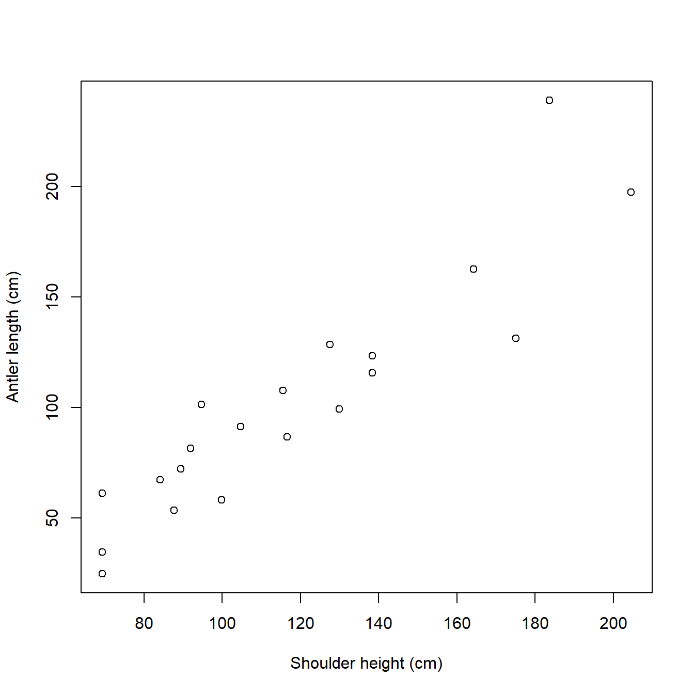
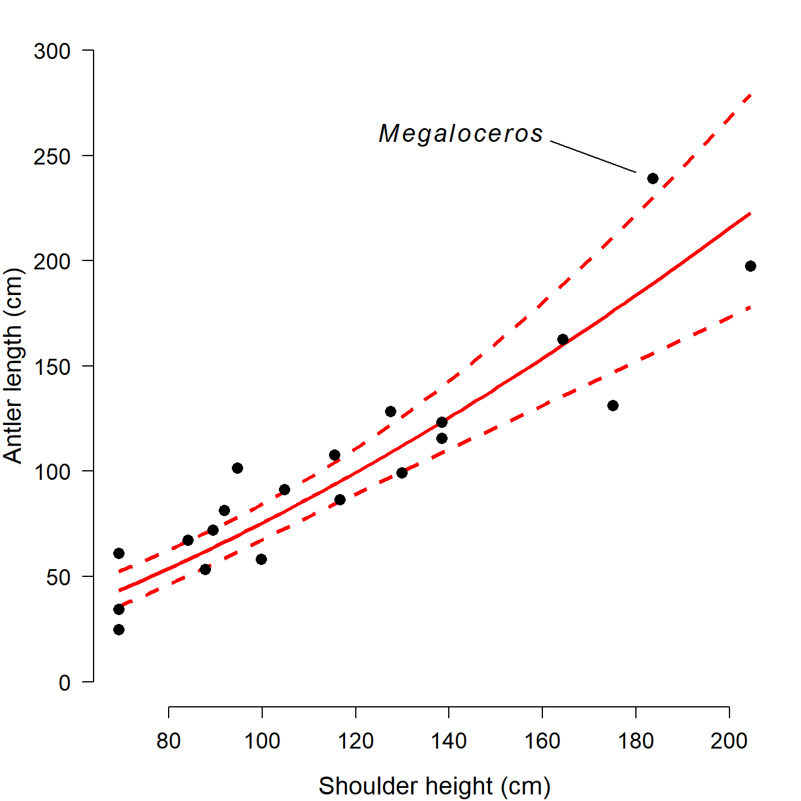
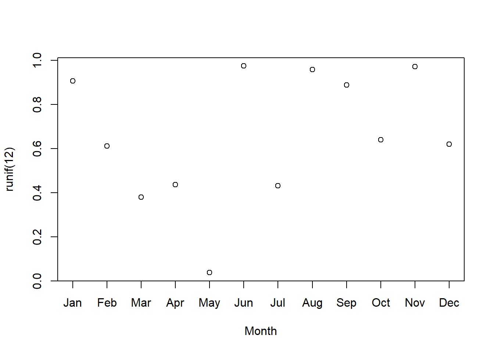
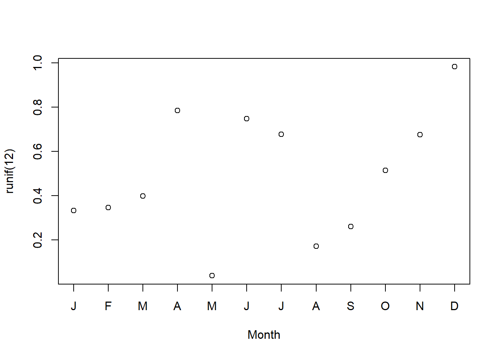

Module 2 Introduction to R
This module is an introduction to the R program and language. We will begin with a brief discussion of R itself, then run through a typical R work session, and then take a deeper dive into some R basics–including how to get help. Most of the topics in this module are covered in greater detail in the module on data manipulation. The current module, Module 2, is meant to get you started before moving on to more advanced material.
By the end of this module you should be able to:
- Explain what R is and what it is used for
- Explain the object-oriented programming paradigm used by R
- Download and install R and RStudio
- Write and execute commands in the R console
- Describe basic R data types and structures
- Manage R code as scripts (.r files)
- Manage and use R packages
- Identify sources of help for R programming
2.1 Getting started with R
2.1.1 What is R?
R is an open-source language and environment for data analysis, statistics, and data visualization. It is descended from an older language called S, which is the basis for the commercial statistics software S-Plus. R is part of part of the GNU free software project. The GNU project is a free and open-source software ecosystem including an operating system and many programs that can replace paid proprietary software. GNU is a recursive acronym that stands for “GNU’s Not Unix”.
R is designed for statistics and data analysis, but it is also a general-purpose programming language. One of the most important features of the R language is that it is object-oriented. R commands and programs focus on manipulating objects in the computer memory. An object is a construct that has a class, and can be acted upon by methods.
- A class is like a blueprint for an object. The class defines the data format in an object, and how other objects can interact with that object.
- An object is an instance of a class.
- A method is a function that works with objects according to their class.
For example, a graphics program might have classes such as “circle”, “square”, and “triangle”. Every circle, square, or triangle that the user draws is an instance of one of those classes. This way the user can create different examples of common shape types without having to define the shapes anew every time one is created.
Everything in R is an object of one kind or another! Understanding this idea is the key to R success. We will learn about some of the most important R classes later.
2.1.2 Advantages of R
If you are going to choose a tool for statistics in your research, you need to have a good reason. R offers several very good reasons to choose it for your statistical computing needs. The key advantages of R are:
- R is free!
- R is widely used for statistics and data analysis.
- R has a large and active community of users and developers. This means that new statistical techniques are often implemented in R before they are implemented in other software.
- R is a highly marketable professional skill because it is widely used in academia, government, and industry.
- R Is open source: you can modify it to suit your needs, and see exactly how it does what it does. The R source code is hosted on github (accessed 2021-12-20).
2.1.3 Disadvantages of R
For all of its advantages, R has some drawbacks. Chief among them:
- R is free. Unlike some paid and proprietary software, there is no official help line to call if you have issues.
- Along the same lines, R is distributed with absolutely no warranty (it says so every time you open R). The accuracy of your analysis depends on the competence of the (unpaid) contributors and the user.
- R often requires more coding than SAS or other tools to get a similar amount of output or perform a similar amount of work. The
tidyverseecosystem of packages addresses some of these issues. - R is slower than SAS and other tools at handling large datasets because it holds all data and objects in memory (RAM) at once. This limits the performance of your machine if you are doing other tasks.
- R is single-threaded by default. This means that R does not handle parallel computation very easily, which could potentially speed up many tasks.
- R has a difficult learning curve because it is so programming-focused.
- Error messages that R gives are often vague and infuriating.
2.1.4 Base R and (vs.?) tidyverse
A colleague of mine who moved from using mostly SAS to using mostly R says that the tidyverse makes R feel more like SAS. The difference he was referring to is the way that SAS functions (“PROCs”, or procedures) tend to automate or abstract away a lot of the low-level functionality and options associated with their methods. Those functions and options are there, but they can be inconvenient to access. The equivalent base R functions, on the other hand, require the user to specify options and manipulate output to a far greater extent. Or, depending on your perspective, they allow the user to specify options and manipulate output. Some people like that, and some people don’t. The amount of interaction and coding in R require to get outputs that other programs like SAS produce automatically is, in my experience, one of the biggest stumbling blocks for new R users.
Because of the amount of work required to get base R to do anything, the degree of automation and abstraction available in the tidyverse packages (Wickham et al. 2019) is very attractive to many R users: they can focus on high-level decisions without having to get into every picayune detail of routine workflows and standard analyses. Tidyverse packages allow for very streamlined and (once you learn it) easy to understand code. These advantages come at a cost: because the functions abstract the finer details away, those details are harder to see. This can be problematic if you need to work more directly with function inputs and outputs, or manipulate options or data in non-standard ways16. The abstraction of the low-level workings of an analysis or program can save a lot of time and headache, but can also make it harder to track down or even to notice errors (although to be fair, systematic approaches to data manipulation such as in package dplyr can also prevent many errors as well).
In my own workflow, and in this course, I tend to use base R methods instead of tidyverse for a few reasons. The first three are entirely personal and subjective.
- I learned R before
tidyversebecame a thing. This isn’t an advantage or disadvantage to either paradigm; it just is. For me, the time and effort costs of switching totidyversewould likely outweigh the benefits. - I prefer the syntax of base R to the “grammar” of
tidyverse. In particular,tidyverseseems to make extensive use of the pipe operator%>%, which tends to make for less clear (to me) code. - I prefer to write code with as few dependencies as possible. This makes it less likely that some random update will break my code.
The other two reasons are more functional and less subjective:
- Debugging and error correction is easier in base R because of the lack of abstraction. If every step is coded manually and out in the open, errors are easier to find, isolate, and fix.
- Debugging and fixing
tidycode often requires knowing base R, but the reverse is never true.
The takehome message is that while both base R and tidyverse offer powerful tools for working with and analyzing data, they represent two overlapping but different programming paradigms. Neither is objectively “better” than the other. Which framework you use depends on what level of abstraction vs. explicitness you are comfortable with in your own code. Base R makes it easier to work flexibly with the low-level inputs and outputs of different methods, but usually at the cost of a steeper learning curve. tidyverse makes routine tasks more streamlined with a unified syntax and grammar for data manipulation, but at the cost of flexibility. My advice is to not restrict yourself to one or the other.
2.2 Download and install R (and RStudio)
If you are on a university campus, many on-campus computers may already have R installed on them. This is the bare minimum you need to work with R. Many people also prefer to use another program for writing R code. The most popular is probably RStudio, which is a more user-friendly interface for R. If you are on a PC or Mac, you will need to download and install both R and RStudio. If you are using a Linux machine, you probably already have R because it is included in most distros. You can still install RStudio to make your life easier.
First, install the latest version of R from the R-project website (accessed 2021-12-20). Select a mirror (download server) from the list. Once you select a mirror, you will be taken to a page where you will select the version of R that corresponds to your operating system. Click on the appropriate link for your operating system and follow the instructions from there to install R. Like many programs you download from the internet, R will come with an installer that will largely take care of everything automatically. Just let the installer run and accept the default options.
Next, you need to install RStudio. It can be installed from here (accessed 2021-12-20). As with R, select the version that corresponds to your operating system. As you did when you installed R above, just let the installer run and accept the default options.
2.3 Using R
2.3.1 Using the base R GUI
R has a very basic front end, or graphical user interface (GUI). Most users find it easier to write their R code in another program. Some of these programs, such as RStudio, are integrated development environments (IDE). Others are text editors with programming capabilities. We’ll explore the default R GUI first and then meet some editor options. The basic R GUI is shown below.

The main window with R is the R console. This is the command line interface to R. Some important features of the console are:
- Command prompt: The
>symbol signifies the beginning of a command. You can enter commands here. - Continue prompt:
+signifies the continuation of a previous command. If you have a+at the beginning of your line, you can get back to a new line using ESCAPE. Note that this will delete the currently incomplete line or command. - The ENTER key executes the current command. This could mean the current line, or multiple lines going back to the most recent
>. [1]at the beginning of results: because your result is an object (with length \(\ge\) 1). The very first value (“element”) in the result is element 1.- Up arrow key: cycles through previously entered commands. You can see many previous commands at once by using the command
history().
Other important features of the R GUI are found in the menu bar:
- File
- New script: opens a new script window within the GUI.
- Ability to open saved scripts or load previous workspaces
- Edit
- Copy, paste, etc.: very useful!
- Data editor: opens a rudimentary spreadsheet-like viewer for datasets that can be used to make edits. Not recommended for routine use.
- GUI preferences: options to change colors, fonts, font sizes, etc., in the GUI. To make changes permanent you may need to save a new
.RConsolefile in your home directory.
- View
- Misc
- List objects: lists all objects in workspace. Equivalent to command
ls(). - Remove all objects: removes all objects form workspace. Equivalent to command
rm(list=ls(all=TRUE)). - List search path: lists currently attached packages. Equivalent to command
search().
- List objects: lists all objects in workspace. Equivalent to command
- Packages: functions to download and install packages.
- Windows: options to change how windows are displayed within GUI.
- Help: options and resources for getting help, including several free R manuals in PDF format.
2.3.2 Using R in RStudio
Although you can type R code directly into the console, or type in script windows within the base R GUI, it is usually easiest to use a separate program for writing code. The two best, in my experience, are RStudio and Notepad++ (see below). RStudio is an IDE designed to manage R projects, and has many useful features. Unlike some other options, RStudio has R built in so you can write code and execute it within the same program. RStudio can be used on Windows, Mac, and Linux operating systems. RStudio also has built-in support for utilities like RMarkdown.
Once you have RStudio installed, open it and you will see a screen like this17

RStudio has an entire environment for working with R in one window. Each of the panels performs different functions. Starting at the bottom left and going clockwise, the panels are:
- Console: command line interface for R. You can type commands here and execute them by pressing ENTER.
- Script: a space where you can type code and later execute it by either clicking “Run” or pressing CRTL-ENTER (CMD-ENTER on a Mac). Usually people write code in the script window rather than typing it directly into the console.
- Environment: this window lists all of the data objects that you have loaded.
- Files: this window lists all of the files available in your R home directory. You can also navigate to other folders on your machine and select files to open.
The bottom right panel also has a tab called “Plots”. This is where plots that you make can be seen. Sometimes you will need to resize this panel to see the plots clearly. All of the panels can be resized by clicking and dragging the borders between them.
2.3.3 Using R with other programs
Notepad++ is an open-source code editor that is available on Windows (accessed 2021-12-20). Notepad++ is a more generic source code editor with built-in R support and many programming features. It includes programming support for R as well as other languages used by biologists, such as Python, C++, Visual Basic, and LaTeX. The key disadvantage of Notepad++ is that it does not connect to R, so you must copy and paste your code to an R console. Another disadvantage is that it is only available for Windows. The image below shows a script in Notepad++,

emacs is a GNU program that is an extremely powerful text editor, code editor, and pretty much everything else. With its extension ess or “emacs speaks statistics”, it can also be an R IDE. Be forewarned, getting emacs and ess to work on Windows can be a major pain.
Other good options include Tinn-R, Jupyter notebooks, and many more. All of these options are subject to irrationally strong personal and organizational preferences. For example, I use Notepad++ almost exclusively in my research for writing and editing R code. I would prefer to use emacs, but it doesn’t play nice with my university PCs. Many people swear by RStudio. Try a few R interfaces and use what works best for you. Or, use the interface that your manager tells you to use.
Whatever you do, you should not use a word processor (e.g., Microsoft Word) to write and edit R code. The reason that you should not use Word for code editing is because Word documents include lots of invisible formatting that can cause issues in R. Worse, Word autocorrects some characters in counter-productive ways. The most problematic are automatic capitalization (because R is case sensitive) and quotation marks. Word autocorrects "" to “” as you type, which makes for nice looking text. However, the curved quotation marks (“”) are not read as valid quotation marks by R. Only “straight quotes” ("") are recognized by R.
2.4 A first R session
One of the best ways to get a feel for R is to step through a typical R workflow. We are going to analyze a classic dataset from evolutionary biology that contains data on the body size and antler size of many species of deer (family Cervidae). The data were collected by Stephen Jay Gould (Gould 1974) to investigate the reason for the massive antler size in an extinct mammal, the Irish elk (Megaloceros giganteus), seen below18. Gould was interested in whether the massive antlers might have resulted from runaway sexual selection or were simply the result of allometric growth. The Irish elk lived across northern Eurasia during the Pleistocene epoch, until about 7700 years ago. Adults stood around 2.1 m high at the shoulder and males bore antlers that could reach up to 3.65 m (\(\approx\) 12 ft) across. Body mass of adult males is estimated to have ranged from 450 to 700 kg (990 to 1540 lb). Irish elk were on average larger than the largest extant cervid, the moose (Alces alces).

2.4.1 Import data
First, load the data into R. The data are contained in the text file elk_data_2021-01-21.csv. Download this file and save it on your computer. If you want to save some time later, save the data file in your R home directory. This is the default folder where R and RStudio will look for files. The R home directory depends on your operating system:
- Windows users: the home directory is your “Documents” folder. The address of this folder is “C:/Users/username/Documents”, where “username” is your Windows logon name. You can get to your Documents folder by opening Windows Explorer (Win-E) and double-clicking “Documents”.
- Mac users: the home directory is your home folder. The address of this folder is “/Users/username” (where username is your username) or “~/”. You can open your home folder by pressing CMD-SHIFT-H, or by using the Go pulldown menu from the menu bar.
- Note for Mac users: When you download a .csv file in MacOS, your computer might open it in a program called “Numbers”. This is a Mac-specific spreadsheet program. When you close the program it is possible to inadvertently save the data file as a new file in .numbers format, which is not readable by R. If you do this, your datafile will become “elk_data_2021-01-21.numbers”, and you will not be able to open it in R or RStudio. .numbers is a different file format than .csv. A .numbers file has the same file name, but it has a different file extension and so it is not the same as a .csv19.
Once you save the data file on your computer, you can import it to RStudio in several ways. Notice that in both methods shown here, nothing is printed to the console after a successful import. Instead, the function reads the CSV file and saves the data to an object that we are calling dat.
2.4.1.1 Method 1: Import in RStudio using File–Import Dataset
In RStudio, click on File–Import Dataset–From Text (base).

Navigate to the data file just as you would if opening a file in any other program. Click Open.

In the dialog box that pops up, change the name of the incoming dataset to “dat”. This is what we will call the dataset when working with it in R. Make sure that the “Strings as factors” box is NOT checked.

Click Import. RStudio will import the data for you and save it in the workspace as an object called “dat”. Notice that a command like dat <- read.csv("~/elk_data_2021-01-21.csv") was run in the console. This command is what RStudio used internally to import the data. If you want to know more, look at method 2 below.
After you click Import, RStudio will import the data and display it for you. The image below shows what that looks like. Notice that RStudio automatically generated the code to import the data and executed it (red arrow); that the dataset is listed in the “Environment” box in the top right (blue arrow), and the dataset is displayed in the top left (green arrow).

Once the dataset is imported, you can view it in the console by typing its name and pressing ENTER. Each method above saved the dataset to an object named dat. Obviously, this is short for “data”20. However, we didn’t call our dataset “data” because data() is already the name of an R function and we don’t want to accidentally overwrite that function.
2.4.1.2 Method 2: Import from command line
You can also import files from the command line directly. This option is preferred by users who need to import files automatically, or who aren’t using RStudio. To use this method, you need to know the name of the folder where the data file is stored. If the data file is in your home directory (see previous section), the command is simple:
dat <- read.csv("elk_data_2021-01-21.csv")The command above will look in your home directory for a file with the filename you specify. The filename must match exactly, including capitalization. For convenience I usually split the command up into two, with one specifying the name and the other importing the file:
dat.name <- "elk_data_2021-01-21.csv"
dat <- read.csv(dat.name)If the data file is NOT in your home directory, you need to tell R which folder to look in. In the example below, I put the file on my Windows desktop21 (C:/Users/ngreen62/Desktop)22. This folder address is provided to R as a character string, and that string is combined with the file name using the paste() command.
use.fold <- "C:/Users/ngreen62/Desktop"
dat <- read.csv(paste(use.fold, dat.name, sep="/"))Notice that the folder address above uses front-slashes (/). Windows uses back-slashes (“\”) in folder addresses, while R requires forward slashes (“/”). Mac and Linux already use front-slashes. If you are a Windows user, you will need to change the back-slashes to front-slashes in the folder address.
Once you have imported the data, you can type the name of the dataset into the console and press ENTER to view it:
dat## height antler species
## 1 69.3 24.8 unknown
## 2 69.3 34.5 unknown
## 3 87.7 53.5 unknown
## 4 99.8 58.3 unknown
## 5 69.3 61.2 unknown
## 6 84.1 67.3 unknown
## 7 89.4 72.2 unknown
## 8 91.9 81.5 unknown
## 9 116.6 86.6 unknown
## 10 104.7 91.4 unknown
## 11 129.9 99.3 unknown
## 12 94.6 101.5 unknown
## 13 115.5 107.8 unknown
## 14 138.4 115.7 unknown
## 15 138.4 123.3 unknown
## 16 127.5 128.5 unknown
## 17 175.1 131.4 alces
## 18 164.3 162.6 unknown
## 19 204.5 197.5 alces
## 20 183.6 239.1 megaloceros2.4.2 Explore and visualize data
Before we do anything, we should look at the dataset. We have two continuous variables, height and antler, so the natural way to examine their relationship is with a scatterplot. Scatterplots are made by the plot() function. By default, the first argument to plot() contains the x values, and the second contains the y values. The values are accessed from the data frame dat using the $ operator. The command below also uses the arguments xlab and ylab to set x-axis and y-axis labels. Notice that R will set the limits of the graph according to the range of each variable; we’ll go over how to set those limits later on.
plot(dat$height, dat$antler,
xlab="Shoulder height (cm)",
ylab="Antler length (cm)")
We might also be interested in how the data are distributed. This will be important later because the data need to meet particular assumptions for our statistical analysis. The simplest way to view a data distribution is with a histogram, hist().
hist(dat$antler, xlab="Antler length (cm)")
We could also try a probability density function (PDF) plot, or plotting the empirical cumulative distribution function (ECDF). Histograms, PDF plots, and ECDF plots are just different ways of displaying how the data are spread out. In the figure below, we use the function par() to set some graphical parameters (including a 1 row \(\times\) 3 column layout using argument mfrow). We also saved the text string “Antler length (cm)” as an object (use.xlab), and then used it in each of the plotting commands so we didn’t have to type the same thing over and over.
use.xlab <- "Antler length (cm)"
par(mfrow=c(1,3))
hist(dat$antler, xlab=use.xlab)
plot(density(dat$antler, from=0), xlab=use.xlab)
plot(ecdf(dat$antler), xlab=use.xlab)
All three plots above show that the antler lengths probably follow a normal distribution. Notice how the PDF plot (center) looks like a very smoothed version of the histogram. This is because it basically is. A histogram shows how many observations fall into discrete ranges, or bins. The PDF of a distribution shows how likely every possible value is relative to other values. That is, the PDF is basically the heights of a histogram with bin widths = 0. The rightmost plot, the ECDF, shows what percentage of observations in a distribution are equal to or less than each value (this is the “cumulative” part of ECDF). If we wanted, we could estimate the actual CDF of the distribution. The PDF and CDF are intimately related because the PDF is the derivative of the CDF (or, the CDF is the integral of the PDF). This is why the y-axis values on a PDF plot look so weird: they are the instantaneous rate of change in the CDF at each value.
Don’t worry if that doesn’t make a lot of sense right now. We will explore data distributions some more later in the course, both in practical terms and in the language of PDFs and CDFs.
2.4.3 Transform data
The plots above show that the antler lengths probably follow a normal distribution, which is convenient for statistical analysis. In fact, many statistical methods were developed to work only with normally distributed data! But, there is a problem. The normal distribution can take on any real value. In statistical jargon, we say that the normal distribution is supported on the interval [\(-\infty\), \(+\infty\)]. A normally distributed variable can thus take on negative values. Does this make sense for antler lengths? Or for any kind of length? Of course not.
One way to avoid the awkwardness of a statistical model that predicts negative lengths is to log-transform the variables. This ensures that any value predicted by the model must be positive. We are actually going to log-transform both the response and predictor variable for reasons that will become clear in the next step. In R this can be done with the log() command:
dat$logy <- log(dat$antler)
dat$logx <- log(dat$height)Notice that we used the natural logarithm (base e) rather than log10. This will matter later when we plot the model and its predictions.
2.4.4 Analyze data
Now that we have log-transformed data, we should plot them to help us decide on an appropriate statistical model. We can make a new version of the scatterplot from earlier. Notice that the axes are now on a different scale, the logarithm of the original values. So, the x-coordinates around 4.9 on the log scale correspond to shoulder heights of \(e^{4.9}\), or about 134.3 cm.
par(mfrow=c(1,1)) # reset plot layout
plot(dat$logx, dat$logy,
xlab="Log Shoulder height (cm)",
ylab="Log Antler length (cm)")
It looks like antler length and shoulder height have a linear relationship on the log scale. That is exactly what we are going to fit, but we need to understand what this represents. The linear model we can fit with the log-transformed data is:
\[\log{\left(Y\right)=\beta_0+\beta_1\log{\left(X\right)}+\varepsilon}\]
In this equation:
- Y is the response or dependent variable (antler length)
- X is the explanatory or independent variable (shoulder height)
- \(\beta_0\) is the y-intercept (i.e., the value of \(log(Y)\) when \(log(X) = 0\)). Called “beta zero” or “beta naught”.
- \(\beta_1\) is the slope or regression coefficient (i.e., the change in \(log(Y)\) per unit change in \(log(X)\)). If \(log(X)\) increases by 1, then \(log(Y)\) increases by \(\beta_1\). Called “beta one”.
- \(\varepsilon\) is a random error term that describes residual variation not explained by the model. Called “epsilon”. In a linear regression model, residuals are identically and independently distributed (i.i.d.) according to a normal distribution with mean 0 and variance \(\sigma^2\). Almost all statistical models assume i.i.d. residuals, which means that errors all come from the same distribution, and are completely independent of each other.
If we wanted to estimate actual antler lengths rather than the logarithm of antler lengths, we have to exponentiate both sides. Ignoring the residuals term for the moment, this gives us:
\[Y=e^{\beta_0}X^{\beta_1}\]
Which is more commonly written as a power law. Power laws are very common in anatomy and morphology. The equation below is the usual form of a power law, where the coefficient a = \(e^{\beta_0}\).
\[Y=aX^b\]
The linear model is fit using the lm() function. Notice that the model terms are specified as a “formula”. The response variable is on the left, then a ~, then the predictor variable (or variables) on the right. The model is saved to an object called mod1, short for “model 1”.
mod1 <- lm(logy~logx, data=dat)We can view the results using the summary() command on the output:
summary(mod1)##
## Call:
## lm(formula = logy ~ logx, data = dat)
##
## Residuals:
## Min 1Q Median 3Q Max
## -0.55752 -0.12729 0.00769 0.15201 0.38060
##
## Coefficients:
## Estimate Std. Error t value Pr(>|t|)
## (Intercept) -2.6476 0.7918 -3.344 0.00361 **
## logx 1.5138 0.1675 9.037 4.14e-08 ***
## ---
## Signif. codes: 0 '***' 0.001 '**' 0.01 '*' 0.05 '.' 0.1 ' ' 1
##
## Residual standard error: 0.24 on 18 degrees of freedom
## Multiple R-squared: 0.8194, Adjusted R-squared: 0.8094
## F-statistic: 81.67 on 1 and 18 DF, p-value: 4.141e-08This tells us that the intercept and slope are statistically significant (P < 0.05 for both terms), and that the model explains about 81% of variation in antler length (adjusted R2 = 0.8094). That’s pretty good.
What if we had not transformed the data? Then we would have had to fit the power law directly. This is possible in R using the nls() function (nonlinear least squares), but this route is usually harder than using lm() on transformed data. Here is the equivalent model fit using the nonlinear model function nls():
mod2 <- nls(antler~a*height^b, data=dat,
start=list(a=exp(-2.6), b=1.51))
summary(mod2)##
## Formula: antler ~ a * height^b
##
## Parameters:
## Estimate Std. Error t value Pr(>|t|)
## a 0.13219 0.09861 1.341 0.197
## b 1.38863 0.14929 9.302 2.69e-08 ***
## ---
## Signif. codes: 0 '***' 0.001 '**' 0.01 '*' 0.05 '.' 0.1 ' ' 1
##
## Residual standard error: 21.49 on 18 degrees of freedom
##
## Number of iterations to convergence: 5
## Achieved convergence tolerance: 8.994e-07Fitting nonlinear models in R can be tricky because you usually need to supply starting values for the algorithm to try. In the example above I used the estimates from the linearized version of the model as starting values. If the starting values are too far away from the “correct” values then the model may not converge, leaving you without a model fit. Even if the model does converge, there is no guarantee that the fitted parameters are correct because there might be multiple stable solutions. Furthermore, some of the common postprocessing done on fitted models such as multiple inference, model comparison, prediction, and error propagation are harder to do in R with nonlinear models (nls() outputs) than with linear models (lm() outputs). We’ll explore how to do this later in the course, but for now we will stick with the linearized fit.
2.4.5 Write out results
Now that we have successfully fit a statistical model, we need to report our findings. Reporting model coefficients is easy enough: just put them into a table.
Table 1. Log-transformed antler length (cm) varied as a linear function of log-transformed shoulder height (cm). Model R2 = 0.8094. Parameters shown are estimate \(\pm\) standard error (SE); t is t-statistic, and P is P-value.
| Parameter | Estimate \(\pm\) SE | t | P |
|---|---|---|---|
| \(Log\left(\beta_0\right)\) | -2.65 \(\pm\) 0.79 | -3.34 | 0.0036 |
| \(\beta_1\) | 1.51 \(\pm\) 0.17 | 9.04 | <0.0001 |
We might also want to present the fitted model in context with the original data. In R this is done using predicted values and their associated uncertainties. Instead of presenting predicted values for the original data, it is common practice to present predicted values for a smooth set of predictor values within the domain of the original data. We can see the minimum and maximum values of the predictor with range(). Then, we use seq() to generate a regular sequence between those limits. Finally, calculate the predictions using predict(), with argument se.fit to get the uncertainty associated with the predictions.
n <- 100
new.x <- seq(from=min(dat$logx), to=max(dat$logx), length=n)
new.x2 <- exp(new.x) # needed for plot later
pred <- predict(mod1,
newdata=data.frame(logx=new.x),
se.fit=TRUE)The last piece we will need is the 95% confidence limits of the predictions. We can calculate these from the predicted means and SE in object pred. Because the predictions are on the logarithmic scale, we will back-transform the predictions. We can get the back-transformed predictions by exponentiating the predicted mean, and by requesting quantiles from the lognormal distribution with function qlnorm(). To get the 95% CI, we request the 2.5% and 97.5% percentiles (i.e., 0.025 and 0.975 quantiles) because the interval between them covers 95% of the distribution.
mn <- exp(pred$fit)
lo <- qlnorm(0.025, pred$fit, pred$se.fit)
hi <- qlnorm(0.975, pred$fit, pred$se.fit)
# not run: alternative (sometimes more reliable)
# way to get predicted mean/median
# mn <- qlnorm(0.5, pred$fit, pred$se.fit)Now we have all the pieces we need to put together a polished, manuscript-quality figure with the original data and the model predictions. We will use the par() command again to set some additional graphics options.
par(mfrow=c(1,1), # 1 x 1 layout
mar=c(4.1, 4.1, 1.1, 1.1), # margin sizes (clockwise from bottom)
bty="n", # no box around plot
las=1, # axis labels in reading direction
lend=1, # flat line ends
cex.lab=1.3, # axis title size
cex.axis=1.2) # axis label size
plot(dat$height, dat$antler, type="n",
xlab="Shoulder height (cm)",
ylab="Antler length (cm)",
ylim=c(0, 300))
points(new.x2, lo, type="l", lwd=3, col="red", lty=2)
points(new.x2, hi, type="l", lwd=3, col="red", lty=2)
points(new.x2, mn, type="l", lwd=3, col="red")
points(dat$height, dat$antler, cex=1.3, pch=16)
There are some other graphics options we could set, but we’ll save those for later in the course. This figure is clean and spare, with a very high data to ink ratio…just the sort of figure that we want to represent our work (Tufte 2001).
Just for fun, let’s label the original object of our investigation, the Irish elk. We can add a text label and a pointer with the commands text() and segments(). This can require some fiddling to get the coordinates just right. First we’ll use function locator() to find some appropriate coordinates. To use locator(), first run that command in the console. Then, click the points on the graph where you want coordinates. Then, right-click and select “Stop”. The coordinates you clicked will be printed to the console.
# not run:
#locator()
# click on the figure where you want arrow ends to be
# $x
# [1] 161.7056 177.5281
# $y
# [1] 257.0432 244.5633Then, use the coordinates you found and add the pointer and text. Of course you could do this in another program like Powerpoint, but keeping everything in R can streamline your workflow.
# add pointer and genus name:
segments(161.7, 257.0, 180, 242)
text(160, 260,
expression(italic(Megaloceros)),
adj=1, # right-aligned at point
cex=1.3) # text size
2.4.6 Save your work?
Now that we are done with the analysis, we can save our work. If you have the code in an R script, you can just save the script and rerun it whenever you want. The results and outputs will be exactly the same next time you open a new R console and run the script23. R scripts have the extension .r or .R.
If you want to save the actual R workspace, you can do this in the console with the save.image() command. By default, this command saves the workspace in your home directory. R workspaces have the extension .RData.
save.image("elk_analysis_2021-06-14.RData")The resulting file is the R workspace created by running the script. If you open it, a new R instance will open that contains the same objects and command history as the original. This is more useful in situations involving calculations that take a long time to run, or when the outputs are more complicated than simple text files or images. Notice that the workspace was saved with an informative name and a date. This is important because without the user-supplied name, R will save the workspace with a generic name…potentially overwriting a previously saved workspace!
2.4.7 What’s next?
This section was designed to demonstrate a typical R workflow with straightforward examples and good coding practices. In the next section, we’ll take a closer look at how R works. Some the material in the upcoming sections was already demonstrated, but not explained, on this page.
2.5 Write and execute commands in the R console
Now that you’ve survived your first R adventure, it’s time to take a closer look at how R works. In this section we’ll focus on getting familiar with the basic syntax of the R language and how to enter R commands.
2.5.1 R commands–basics
Open up a new R instance or RStudio session and take a look at the console. Here commands can be entered at the command prompt, >. The ENTER or RETURN key will execute the current command and print the results (if any) to the console. Try a simple command like 2+2. Notice how the output prints to the console, with a [1] at the start of the line. The [1] signifies that that line starts with the first element of the output. This is to help read outputs with lots of elements…try the command rnorm(100) to see why.
2+2## [1] 4rnorm(100)## [1] 0.1868067548 1.2953417219 1.3496341764 -1.8199058851 -1.0129597934
## [6] 0.7758079984 -0.2446729873 -0.7628311610 1.1871287322 0.5687341349
## [11] 0.2515907763 -1.3367505458 -1.1523874739 2.4543256127 0.1869963139
## [16] -0.4393163702 -0.0591246386 2.3218882814 0.6452875006 0.3217042164
## [21] -1.0585980833 -1.8577768116 0.2816177047 -0.2696880316 0.6292340639
## [26] -2.0491752819 0.3865173066 0.9388559144 0.9614268935 -1.2941535699
## [31] 0.1987585317 1.3948937976 -0.4443539013 -0.3467818080 -1.3394891028
## [36] 0.3248352500 0.3453442934 1.0882126165 -1.0850969947 1.1509566751
## [41] -1.2319974844 1.3428871601 -0.9701891498 1.9068274828 0.3370097559
## [46] -1.3898744374 -0.4298016089 -0.0442773529 -0.2836812472 -0.0520081219
## [51] -1.0893354258 -0.5703620158 1.1049930829 1.2552194034 -1.4890854621
## [56] 1.3473576941 0.0748210623 -1.6124316377 0.4919105726 0.1515581094
## [61] 0.5180248518 -0.4768916424 0.1350865322 0.1408681220 0.6483650912
## [66] 0.2824644386 -0.0001100443 -0.8806680807 -2.3269645388 1.1982580677
## [71] -0.4832922566 0.5087733866 0.2542475936 -1.2960109532 0.5023409534
## [76] 1.0496202326 -0.2426459452 -1.4389497661 -0.9029431446 0.8612725843
## [81] -0.8210071585 -1.4689588806 0.1794126511 0.1425198141 -1.0560004007
## [86] -1.2274682135 -0.6413455301 0.2250168317 0.3148611203 -0.2958914087
## [91] -1.6643713237 1.8103941493 0.9552156749 -0.8964807728 -1.2136214600
## [96] 0.5029205644 0.8911613760 -0.4542943772 0.2878110215 -0.2596923043Commands can be split over multiple lines. When that happens, a + will be seen at the left side of the window instead of a >. A split command will be executed once a complete expression is input. If you accidentally start a command and aren’t sure how to finish it, you can exit and cancel the command with the ESCAPE key. R executes commands, not lines. You can have more than one command on a line separated by a semi-colon ;, but this generally frowned upon.
# command split across lines:
2+
1## [1] 3# two commands on a line
2+2; 3+3## [1] 4## [1] 6For this course you should be able to copy and paste most commands directly from the page to your R console. You can also copy and paste commands to the script window and run them from there. This is useful for running multiple commands at once, or for writing more complicated programs. The image below shows this method in action:

2.5.2 Elements of R code
As you start to learn R, it is important that you save the code you write for later. This way you can refer back to how you solved problems in the past, and have a record of what you did. Sections of code, or whole files filled with code, that accomplish a specific task are referred to as scripts. Get in the habit of scripting everything. This not only documents your workflow, but makes your work reproducible, modifiable, and eventually more efficient. R scripts can even be called from R and executed, which has obvious implications for reproducibility and automation.
2.5.2.2 Objects
Everything in R is an object of some kind. When you import data, run an analysis, or even just when you do basic calculations, you are creating objects that contain those values. Most of R programming is just calling and manipulating objects in your workspace. That’s sort of like saying that language is just calling and manipulating sounds.
The commands below show how to create an object by assignment (<-), and print the value assigned to an object to the console. The third command shows how the name of an object can be used in place of the value it holds. The fourth command demonstrates that even simple calculations return objects as results, even if the object is just printed to the console instead of saved.
a <- 3
a
## [1] 3
a+4
## [1] 7
class(a+4)
## [1] "numeric"All objects have at least one class, and their values have a type. We’ll explore some of the most important classes and types later. For now, the class of an object is what kind of object it is; the type of a value is the kind of value. The class of an object or the type of a value determines how those things interact with R functions.
2.5.2.3 Functions
R code is built around using functions to manipulate objects (and functions are themselves a kind of object). Functions are called by their names, with the arguments to the function specified within parentheses. This is referred to as a function call or a command. The arguments of an R function can be named or not. Below are some examples using rnorm(), the function that draws random values from the normal distribution.
# commands with named arguments:
rnorm(n=10, mean=5, sd=2)
## [1] 5.951771 4.566881 5.216120 2.718580 5.581812 5.251499 2.496277 3.445045
## [9] 1.361433 2.033040
rnorm(mean=5, sd=2, n=10)
## [1] 3.177625 2.191203 3.969389 6.378298 4.807159 5.320653 4.335875 5.363562
## [9] 8.644716 3.552593When the arguments of a function are not named, then R will assume which value to use for which argument. This decision is based on a default order of arguments. The default order can be determined from the help page for the function (accessed in this case by ?rnorm). Below are two examples that call rnorm() with unnamed arguments. Notice how different the results are. This is because R expects unnamed arguments to be the number of values, the mean, and the standard deviation (SD), in that order.
rnorm(10,5,2)
## [1] 6.725276 8.163568 7.725576 4.101334 7.069661 3.312772 5.516937 6.931724
## [9] 1.116817 5.648863
rnorm(2,5,10)
## [1] 8.180806 14.923327Most R functions require their arguments to be in the correct format (or type). For example, a function might require a number and not a character string. The example below illustrates this by providing the SD as a character string and not as a number. This line should return an error because it cannot run with an incorrectly formatted SD argument.
rnorm(10,5,"2")## Error in rnorm(10, 5, "2"): invalid argumentsTo recap, argument order is important when using functions. You can supply arguments to a function without naming them if you put them in the proper order. See the help files to see what the order is. When in doubt, name your arguments.
Functions expect arguments in a particular format. If a function is not working, you might have an argument formatted incorrectly. Sometimes it’s helpful to look at each argument separately in the R console, outside of the function. To do this, copy/paste each argument to the R console separately and execute by hitting ENTER.
Some function arguments have default values, so you don’t have to supply them. For example, runif(), which draws random numbers from the uniform distribution, defaults to the interval between 0 and 1. So, the two runif() commands below are equivalent because 0 and 1 are the defaults for the limits of the interval. The set.seed() command before each runif() command is to set the random number seed, ensuring that the results are identical. If you run the runif() commands without resetting the random number seed, the commands will return different results because of the random nature of the function.
set.seed(42)
runif(10,0,1)## [1] 0.9148060 0.9370754 0.2861395 0.8304476 0.6417455 0.5190959 0.7365883
## [8] 0.1346666 0.6569923 0.7050648# again, but with default arguments implied
set.seed(42)
runif(10)## [1] 0.9148060 0.9370754 0.2861395 0.8304476 0.6417455 0.5190959 0.7365883
## [8] 0.1346666 0.6569923 0.70506482.5.3 The R workspace
When you use R, all objects and data that you use exist in the R workspace. Objects in the workspace can be called from the console. You can think of the workspace like a kind of sandbox or workbench.
Most of the time, when you start R this creates a new workspace with no objects. If you open a previously saved workspace, you will see the message [Previously saved workspace restored]. If you saved your R workspace without a unique name, it can be hard to figure out what workspace you are in. You can use the ls() command to see what is in the workspace, which might help you figure out what workspace has been loaded. If there are no objects in the workspace, the result of ls() will be character(0). This output means that the ls() command returned a vector of text values (character) with 0 elements. In other words, the workspace contains no objects.
As you work, your workspace will fill up with objects. This isn’t a big deal until you start to either have too many names to keep track of, or start to use too much memory. The first problem can be dealt with by commenting your code. The second problem can be solved by deleting unneeded objects to save space. You can check to see how much memory your R objects are using with the following command:
sort(sapply(mget(ls()),object.size),decreasing=TRUE)This will print the sizes of objects in memory in the current workspace, in descending order. The default units are bytes. If you want the results in Mb, divide the output by 1.024e6.
a <- sort(sapply(mget(ls()),object.size),decreasing=TRUE)
a/1.024e6R objects can be removed using the rm() function. You can remove objects one at a time or by supplying a set of names. Note that the set of names is supplied to an argument called list, which is confusing because list is also the name of a special type of object in R.
# not run, but try on your machine
x <- 1
y <- 2
z <- 3
ls() # shows x, y, and z in workspace
rm(x)
ls() # x is gone
rm(list=c("y", "z"))
ls() # x, y, and z are gone2.5.4 R code basics: assignment and operators
2.5.4.1 Assignment
The most important R function is assignment. When you assign a value to a variable, you can then use that variable in place of the value. Assigning a value to variable name will automatically create a new object in the workspace with that name. If an object with that name already exists, assigning a new value to that name will overwrite the old object.
The left arrow <- is the assignment operator. You can use = for assignment but really shouldn’t because = is easily confused with the equality symbol ==. Also, = is a mathematical symbol, but <- is unambiguously an R operation. You can also use ->, but doing so usually makes your code harder to read rather than easier.
aa <- 4
bb <- 1:10Don’t do this:
cc = 5Don’t do this either.
5 -> ccAnd definitely don’t do this24:
a <- 5 -> bYou can chain multiple assignments together in a single command. This is useful if you need to quickly create several objects with the same structure:
list3 <- list2 <- list1 <- vector("list", 5)Assignment can also be used to change or overwrite parts of pre-existing objects. Usually this involves the bracket notation. In the example below, the third element of object a (a[3]) is replaced with the number 42. We’ll practice with the bracket notation in the data manipulation module.
a <- 1:5
a## [1] 1 2 3 4 5a[3] <- 42
a## [1] 1 2 42 4 5One little-known feature of R assignment is that it can resize objects. For example, if you assign a value to the n-th element of a vector that has fewer than n elements, R will increase the length of the object to the size needed. It should be noted that this can be done accidentally as well as intentionally, so you need to be very careful if you resize objects using assignment. Personally, I don’t do this because it is often clearer to change the size of objects in a separate command.
# resize by assignment (not recommended)
a <- 1:3
a[5] <- 5
a## [1] 1 2 3 NA 5# resize in separate command (preferred)
a <- 1:3
length(a) <- 5
a## [1] 1 2 3 NA NAa[5] <- 5
a## [1] 1 2 3 NA 5# resize by concatenation (preferred)
a <- 1:3
a <- c(a, 4:5)
a## [1] 1 2 3 4 52.5.4.2 R operators
Most math operators in R are similar to those in other languages/programs. For math expressions, the standard order of operations (PEMDAS) applies, but you can use parentheses if you want to be sure. The integer sequence operator : comes first, and comparison tests (==, <, <=, >, and >=) come last. The examples below show how many common R operators function, taking advantage of the fact that you can use an object’s name in place of its value in most situations.
# make some values to work with
aa <- 5
bb <- 8
# multiply
aa*3
## [1] 15
# add
bb+3
## [1] 11
# square root
sqrt(aa)
## [1] 2.236068
# natural logarithm (base e)
log(aa)
## [1] 1.609438
# logarithm (arbitrary base)
log(aa, base=3)
## [1] 1.464974
log(aa, pi)
## [1] 1.405954
# common logarithm (base 10)
log10(aa)
## [1] 0.69897
# exponentiation with base e (antilog)
exp(aa)
## [1] 148.4132
# Vectorized (element-wise) multiplication
bb*2:5
## [1] 16 24 32 40
# Exponentiation
bb^2
## [1] 64
# Alternate symbol for exponentiation (rare)
bb**2
## [1] 64
# Remainder (modulus)
bb %% 3
## [1] 2
# Quotient without remainder
bb %/% 3
## [1] 2
# Order of operations
aa+2*3
## [1] 11
# Order of operations
aa+(2*3)
## [1] 11
# Order of operations
(aa+2)*3
## [1] 21
# Sequence of integers
1:10
## [1] 1 2 3 4 5 6 7 8 9 10
# Note that ":" comes first!
1:10*10
## [1] 10 20 30 40 50 60 70 80 90 100
# Comparisons are last
2*2 > 1:5*2
## [1] TRUE FALSE FALSE FALSE FALSESome of these examples illustrate another key concept in R programming: vectorization. Vectorization refers to how many R functions can operate on sets of numbers (vectors) just as well as on single values (scalars). The function will operate on every element of the vector in order. Most R functions are vectorized to some extent. This is very handy because many operations in statistics deal with vectors of values.
Vectorization can cause headaches if the vectors are not of the same length. If the length of one vector is a multiple of the length of the other, then the shorter vector gets recycled. This is sometimes called the “recycling rule”. If the length of the longer vector is not a multiple of the length of the shorter vector, the shorter one will be recycled a non-integer number of times and R will return a warning.
# lengths compatible:
x <- 1:2
y <- 3:6
x+y## [1] 4 6 6 8# lengths not compatible:
a <- 1:3
b <- 4:5
a + b## Warning in a + b: longer object length is not a multiple of shorter object
## length## [1] 5 7 72.5.4.3 Selecting with brackets []
The most common way to select parts of R objects is with the bracket notation. The square bracket symbols [] are used to define subsets of an object. Within the brackets, pieces of an object are selected by the indices of the elements to be selected. Unlike many programming languages, indices in R start at 1 (instead of 0). The example below shows how brackets work on a vector of numeric values.
a <- 3:8
a[1] # first element of a
## [1] 3
a[1:3] # first through third elements
## [1] 3 4 5
a[c(2,4)] # second and fourth elements
## [1] 4 6Remember, everything in R is an object. You can save the output from one of the commands above as an object:
b <- a[c(2,4)]
b## [1] 4 6Brackets work on more complicated objects as well. The figure below shows how brackets work on a matrix, data frame, or array, which have 2, 2, and \(\ge\) 3 dimensions, respectively.

The examples below select parts of the iris dataset. The iris dataset is a data frame, one of the most important types of objects in R. Unlike the vector a above, iris has two dimensions: rows and columns. In the brackets, the dimensions are given separated by a comma. You must include the comma which separates the dimensions, even if you don’t supply a value for one of the dimensions. Supplying the wrong number of dimensions will either cause an error (good) or something unexpected (bad). A missing value for rows or columns will select all rows or columns.
# first 4 rows, all columns of iris
iris[1:4,] ## Sepal.Length Sepal.Width Petal.Length Petal.Width Species
## 1 5.1 3.5 1.4 0.2 setosa
## 2 4.9 3.0 1.4 0.2 setosa
## 3 4.7 3.2 1.3 0.2 setosa
## 4 4.6 3.1 1.5 0.2 setosa# first 3 columns, all rows of iris
iris[,1:3] ## Sepal.Length Sepal.Width Petal.Length
## 1 5.1 3.5 1.4
## 2 4.9 3.0 1.4
## 3 4.7 3.2 1.3
## 4 4.6 3.1 1.5
## 5 5.0 3.6 1.4
## 6 5.4 3.9 1.7
## 7 4.6 3.4 1.4
## 8 5.0 3.4 1.5
## 9 4.4 2.9 1.4
## 10 4.9 3.1 1.5
## 11 5.4 3.7 1.5
## 12 4.8 3.4 1.6
## 13 4.8 3.0 1.4
## 14 4.3 3.0 1.1
## 15 5.8 4.0 1.2
## 16 5.7 4.4 1.5
## 17 5.4 3.9 1.3
## 18 5.1 3.5 1.4
## 19 5.7 3.8 1.7
## 20 5.1 3.8 1.5
## 21 5.4 3.4 1.7
## 22 5.1 3.7 1.5
## 23 4.6 3.6 1.0
## 24 5.1 3.3 1.7
## 25 4.8 3.4 1.9
## 26 5.0 3.0 1.6
## 27 5.0 3.4 1.6
## 28 5.2 3.5 1.5
## 29 5.2 3.4 1.4
## 30 4.7 3.2 1.6
## 31 4.8 3.1 1.6
## 32 5.4 3.4 1.5
## 33 5.2 4.1 1.5
## 34 5.5 4.2 1.4
## 35 4.9 3.1 1.5
## 36 5.0 3.2 1.2
## 37 5.5 3.5 1.3
## 38 4.9 3.6 1.4
## 39 4.4 3.0 1.3
## 40 5.1 3.4 1.5
## 41 5.0 3.5 1.3
## 42 4.5 2.3 1.3
## 43 4.4 3.2 1.3
## 44 5.0 3.5 1.6
## 45 5.1 3.8 1.9
## 46 4.8 3.0 1.4
## 47 5.1 3.8 1.6
## 48 4.6 3.2 1.4
## 49 5.3 3.7 1.5
## 50 5.0 3.3 1.4
## 51 7.0 3.2 4.7
## 52 6.4 3.2 4.5
## 53 6.9 3.1 4.9
## 54 5.5 2.3 4.0
## 55 6.5 2.8 4.6
## 56 5.7 2.8 4.5
## 57 6.3 3.3 4.7
## 58 4.9 2.4 3.3
## 59 6.6 2.9 4.6
## 60 5.2 2.7 3.9
## 61 5.0 2.0 3.5
## 62 5.9 3.0 4.2
## 63 6.0 2.2 4.0
## 64 6.1 2.9 4.7
## 65 5.6 2.9 3.6
## 66 6.7 3.1 4.4
## 67 5.6 3.0 4.5
## 68 5.8 2.7 4.1
## 69 6.2 2.2 4.5
## 70 5.6 2.5 3.9
## 71 5.9 3.2 4.8
## 72 6.1 2.8 4.0
## 73 6.3 2.5 4.9
## 74 6.1 2.8 4.7
## 75 6.4 2.9 4.3
## 76 6.6 3.0 4.4
## 77 6.8 2.8 4.8
## 78 6.7 3.0 5.0
## 79 6.0 2.9 4.5
## 80 5.7 2.6 3.5
## 81 5.5 2.4 3.8
## 82 5.5 2.4 3.7
## 83 5.8 2.7 3.9
## 84 6.0 2.7 5.1
## 85 5.4 3.0 4.5
## 86 6.0 3.4 4.5
## 87 6.7 3.1 4.7
## 88 6.3 2.3 4.4
## 89 5.6 3.0 4.1
## 90 5.5 2.5 4.0
## 91 5.5 2.6 4.4
## 92 6.1 3.0 4.6
## 93 5.8 2.6 4.0
## 94 5.0 2.3 3.3
## 95 5.6 2.7 4.2
## 96 5.7 3.0 4.2
## 97 5.7 2.9 4.2
## 98 6.2 2.9 4.3
## 99 5.1 2.5 3.0
## 100 5.7 2.8 4.1
## 101 6.3 3.3 6.0
## 102 5.8 2.7 5.1
## 103 7.1 3.0 5.9
## 104 6.3 2.9 5.6
## 105 6.5 3.0 5.8
## 106 7.6 3.0 6.6
## 107 4.9 2.5 4.5
## 108 7.3 2.9 6.3
## 109 6.7 2.5 5.8
## 110 7.2 3.6 6.1
## 111 6.5 3.2 5.1
## 112 6.4 2.7 5.3
## 113 6.8 3.0 5.5
## 114 5.7 2.5 5.0
## 115 5.8 2.8 5.1
## 116 6.4 3.2 5.3
## 117 6.5 3.0 5.5
## 118 7.7 3.8 6.7
## 119 7.7 2.6 6.9
## 120 6.0 2.2 5.0
## 121 6.9 3.2 5.7
## 122 5.6 2.8 4.9
## 123 7.7 2.8 6.7
## 124 6.3 2.7 4.9
## 125 6.7 3.3 5.7
## 126 7.2 3.2 6.0
## 127 6.2 2.8 4.8
## 128 6.1 3.0 4.9
## 129 6.4 2.8 5.6
## 130 7.2 3.0 5.8
## 131 7.4 2.8 6.1
## 132 7.9 3.8 6.4
## 133 6.4 2.8 5.6
## 134 6.3 2.8 5.1
## 135 6.1 2.6 5.6
## 136 7.7 3.0 6.1
## 137 6.3 3.4 5.6
## 138 6.4 3.1 5.5
## 139 6.0 3.0 4.8
## 140 6.9 3.1 5.4
## 141 6.7 3.1 5.6
## 142 6.9 3.1 5.1
## 143 5.8 2.7 5.1
## 144 6.8 3.2 5.9
## 145 6.7 3.3 5.7
## 146 6.7 3.0 5.2
## 147 6.3 2.5 5.0
## 148 6.5 3.0 5.2
## 149 6.2 3.4 5.4
## 150 5.9 3.0 5.1# rows 12-16 and columns 1-4
iris[12:16, 1:4] ## Sepal.Length Sepal.Width Petal.Length Petal.Width
## 12 4.8 3.4 1.6 0.2
## 13 4.8 3.0 1.4 0.1
## 14 4.3 3.0 1.1 0.1
## 15 5.8 4.0 1.2 0.2
## 16 5.7 4.4 1.5 0.4The bracket notation can be extremely powerful when logical tests are used instead of supplying numbers directly. Any R expression or command that evaluates to numeric values can be supplied inside the brackets. This is how I usually subset my datasets.
flag1 <- which(iris$Species == "setosa")
flag2 <- which(iris$Sepal.Length > 5.4)
iris[flag1,] # meets first condition## Sepal.Length Sepal.Width Petal.Length Petal.Width Species
## 1 5.1 3.5 1.4 0.2 setosa
## 2 4.9 3.0 1.4 0.2 setosa
## 3 4.7 3.2 1.3 0.2 setosa
## 4 4.6 3.1 1.5 0.2 setosa
## 5 5.0 3.6 1.4 0.2 setosa
## 6 5.4 3.9 1.7 0.4 setosa
## 7 4.6 3.4 1.4 0.3 setosa
## 8 5.0 3.4 1.5 0.2 setosa
## 9 4.4 2.9 1.4 0.2 setosa
## 10 4.9 3.1 1.5 0.1 setosa
## 11 5.4 3.7 1.5 0.2 setosa
## 12 4.8 3.4 1.6 0.2 setosa
## 13 4.8 3.0 1.4 0.1 setosa
## 14 4.3 3.0 1.1 0.1 setosa
## 15 5.8 4.0 1.2 0.2 setosa
## 16 5.7 4.4 1.5 0.4 setosa
## 17 5.4 3.9 1.3 0.4 setosa
## 18 5.1 3.5 1.4 0.3 setosa
## 19 5.7 3.8 1.7 0.3 setosa
## 20 5.1 3.8 1.5 0.3 setosa
## 21 5.4 3.4 1.7 0.2 setosa
## 22 5.1 3.7 1.5 0.4 setosa
## 23 4.6 3.6 1.0 0.2 setosa
## 24 5.1 3.3 1.7 0.5 setosa
## 25 4.8 3.4 1.9 0.2 setosa
## 26 5.0 3.0 1.6 0.2 setosa
## 27 5.0 3.4 1.6 0.4 setosa
## 28 5.2 3.5 1.5 0.2 setosa
## 29 5.2 3.4 1.4 0.2 setosa
## 30 4.7 3.2 1.6 0.2 setosa
## 31 4.8 3.1 1.6 0.2 setosa
## 32 5.4 3.4 1.5 0.4 setosa
## 33 5.2 4.1 1.5 0.1 setosa
## 34 5.5 4.2 1.4 0.2 setosa
## 35 4.9 3.1 1.5 0.2 setosa
## 36 5.0 3.2 1.2 0.2 setosa
## 37 5.5 3.5 1.3 0.2 setosa
## 38 4.9 3.6 1.4 0.1 setosa
## 39 4.4 3.0 1.3 0.2 setosa
## 40 5.1 3.4 1.5 0.2 setosa
## 41 5.0 3.5 1.3 0.3 setosa
## 42 4.5 2.3 1.3 0.3 setosa
## 43 4.4 3.2 1.3 0.2 setosa
## 44 5.0 3.5 1.6 0.6 setosa
## 45 5.1 3.8 1.9 0.4 setosa
## 46 4.8 3.0 1.4 0.3 setosa
## 47 5.1 3.8 1.6 0.2 setosa
## 48 4.6 3.2 1.4 0.2 setosa
## 49 5.3 3.7 1.5 0.2 setosa
## 50 5.0 3.3 1.4 0.2 setosairis[intersect(flag1, flag2),] # meets both conditions## Sepal.Length Sepal.Width Petal.Length Petal.Width Species
## 15 5.8 4.0 1.2 0.2 setosa
## 16 5.7 4.4 1.5 0.4 setosa
## 19 5.7 3.8 1.7 0.3 setosa
## 34 5.5 4.2 1.4 0.2 setosa
## 37 5.5 3.5 1.3 0.2 setosairis[union(flag1, flag2),] # meets either condition## Sepal.Length Sepal.Width Petal.Length Petal.Width Species
## 1 5.1 3.5 1.4 0.2 setosa
## 2 4.9 3.0 1.4 0.2 setosa
## 3 4.7 3.2 1.3 0.2 setosa
## 4 4.6 3.1 1.5 0.2 setosa
## 5 5.0 3.6 1.4 0.2 setosa
## 6 5.4 3.9 1.7 0.4 setosa
## 7 4.6 3.4 1.4 0.3 setosa
## 8 5.0 3.4 1.5 0.2 setosa
## 9 4.4 2.9 1.4 0.2 setosa
## 10 4.9 3.1 1.5 0.1 setosa
## 11 5.4 3.7 1.5 0.2 setosa
## 12 4.8 3.4 1.6 0.2 setosa
## 13 4.8 3.0 1.4 0.1 setosa
## 14 4.3 3.0 1.1 0.1 setosa
## 15 5.8 4.0 1.2 0.2 setosa
## 16 5.7 4.4 1.5 0.4 setosa
## 17 5.4 3.9 1.3 0.4 setosa
## 18 5.1 3.5 1.4 0.3 setosa
## 19 5.7 3.8 1.7 0.3 setosa
## 20 5.1 3.8 1.5 0.3 setosa
## 21 5.4 3.4 1.7 0.2 setosa
## 22 5.1 3.7 1.5 0.4 setosa
## 23 4.6 3.6 1.0 0.2 setosa
## 24 5.1 3.3 1.7 0.5 setosa
## 25 4.8 3.4 1.9 0.2 setosa
## 26 5.0 3.0 1.6 0.2 setosa
## 27 5.0 3.4 1.6 0.4 setosa
## 28 5.2 3.5 1.5 0.2 setosa
## 29 5.2 3.4 1.4 0.2 setosa
## 30 4.7 3.2 1.6 0.2 setosa
## 31 4.8 3.1 1.6 0.2 setosa
## 32 5.4 3.4 1.5 0.4 setosa
## 33 5.2 4.1 1.5 0.1 setosa
## 34 5.5 4.2 1.4 0.2 setosa
## 35 4.9 3.1 1.5 0.2 setosa
## 36 5.0 3.2 1.2 0.2 setosa
## 37 5.5 3.5 1.3 0.2 setosa
## 38 4.9 3.6 1.4 0.1 setosa
## 39 4.4 3.0 1.3 0.2 setosa
## 40 5.1 3.4 1.5 0.2 setosa
## 41 5.0 3.5 1.3 0.3 setosa
## 42 4.5 2.3 1.3 0.3 setosa
## 43 4.4 3.2 1.3 0.2 setosa
## 44 5.0 3.5 1.6 0.6 setosa
## 45 5.1 3.8 1.9 0.4 setosa
## 46 4.8 3.0 1.4 0.3 setosa
## 47 5.1 3.8 1.6 0.2 setosa
## 48 4.6 3.2 1.4 0.2 setosa
## 49 5.3 3.7 1.5 0.2 setosa
## 50 5.0 3.3 1.4 0.2 setosa
## 51 7.0 3.2 4.7 1.4 versicolor
## 52 6.4 3.2 4.5 1.5 versicolor
## 53 6.9 3.1 4.9 1.5 versicolor
## 54 5.5 2.3 4.0 1.3 versicolor
## 55 6.5 2.8 4.6 1.5 versicolor
## 56 5.7 2.8 4.5 1.3 versicolor
## 57 6.3 3.3 4.7 1.6 versicolor
## 59 6.6 2.9 4.6 1.3 versicolor
## 62 5.9 3.0 4.2 1.5 versicolor
## 63 6.0 2.2 4.0 1.0 versicolor
## 64 6.1 2.9 4.7 1.4 versicolor
## 65 5.6 2.9 3.6 1.3 versicolor
## 66 6.7 3.1 4.4 1.4 versicolor
## 67 5.6 3.0 4.5 1.5 versicolor
## 68 5.8 2.7 4.1 1.0 versicolor
## 69 6.2 2.2 4.5 1.5 versicolor
## 70 5.6 2.5 3.9 1.1 versicolor
## 71 5.9 3.2 4.8 1.8 versicolor
## 72 6.1 2.8 4.0 1.3 versicolor
## 73 6.3 2.5 4.9 1.5 versicolor
## 74 6.1 2.8 4.7 1.2 versicolor
## 75 6.4 2.9 4.3 1.3 versicolor
## 76 6.6 3.0 4.4 1.4 versicolor
## 77 6.8 2.8 4.8 1.4 versicolor
## 78 6.7 3.0 5.0 1.7 versicolor
## 79 6.0 2.9 4.5 1.5 versicolor
## 80 5.7 2.6 3.5 1.0 versicolor
## 81 5.5 2.4 3.8 1.1 versicolor
## 82 5.5 2.4 3.7 1.0 versicolor
## 83 5.8 2.7 3.9 1.2 versicolor
## 84 6.0 2.7 5.1 1.6 versicolor
## 86 6.0 3.4 4.5 1.6 versicolor
## 87 6.7 3.1 4.7 1.5 versicolor
## 88 6.3 2.3 4.4 1.3 versicolor
## 89 5.6 3.0 4.1 1.3 versicolor
## 90 5.5 2.5 4.0 1.3 versicolor
## 91 5.5 2.6 4.4 1.2 versicolor
## 92 6.1 3.0 4.6 1.4 versicolor
## 93 5.8 2.6 4.0 1.2 versicolor
## 95 5.6 2.7 4.2 1.3 versicolor
## 96 5.7 3.0 4.2 1.2 versicolor
## 97 5.7 2.9 4.2 1.3 versicolor
## 98 6.2 2.9 4.3 1.3 versicolor
## 100 5.7 2.8 4.1 1.3 versicolor
## 101 6.3 3.3 6.0 2.5 virginica
## 102 5.8 2.7 5.1 1.9 virginica
## 103 7.1 3.0 5.9 2.1 virginica
## 104 6.3 2.9 5.6 1.8 virginica
## 105 6.5 3.0 5.8 2.2 virginica
## 106 7.6 3.0 6.6 2.1 virginica
## 108 7.3 2.9 6.3 1.8 virginica
## 109 6.7 2.5 5.8 1.8 virginica
## 110 7.2 3.6 6.1 2.5 virginica
## 111 6.5 3.2 5.1 2.0 virginica
## 112 6.4 2.7 5.3 1.9 virginica
## 113 6.8 3.0 5.5 2.1 virginica
## 114 5.7 2.5 5.0 2.0 virginica
## 115 5.8 2.8 5.1 2.4 virginica
## 116 6.4 3.2 5.3 2.3 virginica
## 117 6.5 3.0 5.5 1.8 virginica
## 118 7.7 3.8 6.7 2.2 virginica
## 119 7.7 2.6 6.9 2.3 virginica
## 120 6.0 2.2 5.0 1.5 virginica
## 121 6.9 3.2 5.7 2.3 virginica
## 122 5.6 2.8 4.9 2.0 virginica
## 123 7.7 2.8 6.7 2.0 virginica
## 124 6.3 2.7 4.9 1.8 virginica
## 125 6.7 3.3 5.7 2.1 virginica
## 126 7.2 3.2 6.0 1.8 virginica
## 127 6.2 2.8 4.8 1.8 virginica
## 128 6.1 3.0 4.9 1.8 virginica
## 129 6.4 2.8 5.6 2.1 virginica
## 130 7.2 3.0 5.8 1.6 virginica
## 131 7.4 2.8 6.1 1.9 virginica
## 132 7.9 3.8 6.4 2.0 virginica
## 133 6.4 2.8 5.6 2.2 virginica
## 134 6.3 2.8 5.1 1.5 virginica
## 135 6.1 2.6 5.6 1.4 virginica
## 136 7.7 3.0 6.1 2.3 virginica
## 137 6.3 3.4 5.6 2.4 virginica
## 138 6.4 3.1 5.5 1.8 virginica
## 139 6.0 3.0 4.8 1.8 virginica
## 140 6.9 3.1 5.4 2.1 virginica
## 141 6.7 3.1 5.6 2.4 virginica
## 142 6.9 3.1 5.1 2.3 virginica
## 143 5.8 2.7 5.1 1.9 virginica
## 144 6.8 3.2 5.9 2.3 virginica
## 145 6.7 3.3 5.7 2.5 virginica
## 146 6.7 3.0 5.2 2.3 virginica
## 147 6.3 2.5 5.0 1.9 virginica
## 148 6.5 3.0 5.2 2.0 virginica
## 149 6.2 3.4 5.4 2.3 virginica
## 150 5.9 3.0 5.1 1.8 virginicairis[setdiff(flag1, flag2),] # meets neither condition## Sepal.Length Sepal.Width Petal.Length Petal.Width Species
## 1 5.1 3.5 1.4 0.2 setosa
## 2 4.9 3.0 1.4 0.2 setosa
## 3 4.7 3.2 1.3 0.2 setosa
## 4 4.6 3.1 1.5 0.2 setosa
## 5 5.0 3.6 1.4 0.2 setosa
## 6 5.4 3.9 1.7 0.4 setosa
## 7 4.6 3.4 1.4 0.3 setosa
## 8 5.0 3.4 1.5 0.2 setosa
## 9 4.4 2.9 1.4 0.2 setosa
## 10 4.9 3.1 1.5 0.1 setosa
## 11 5.4 3.7 1.5 0.2 setosa
## 12 4.8 3.4 1.6 0.2 setosa
## 13 4.8 3.0 1.4 0.1 setosa
## 14 4.3 3.0 1.1 0.1 setosa
## 17 5.4 3.9 1.3 0.4 setosa
## 18 5.1 3.5 1.4 0.3 setosa
## 20 5.1 3.8 1.5 0.3 setosa
## 21 5.4 3.4 1.7 0.2 setosa
## 22 5.1 3.7 1.5 0.4 setosa
## 23 4.6 3.6 1.0 0.2 setosa
## 24 5.1 3.3 1.7 0.5 setosa
## 25 4.8 3.4 1.9 0.2 setosa
## 26 5.0 3.0 1.6 0.2 setosa
## 27 5.0 3.4 1.6 0.4 setosa
## 28 5.2 3.5 1.5 0.2 setosa
## 29 5.2 3.4 1.4 0.2 setosa
## 30 4.7 3.2 1.6 0.2 setosa
## 31 4.8 3.1 1.6 0.2 setosa
## 32 5.4 3.4 1.5 0.4 setosa
## 33 5.2 4.1 1.5 0.1 setosa
## 35 4.9 3.1 1.5 0.2 setosa
## 36 5.0 3.2 1.2 0.2 setosa
## 38 4.9 3.6 1.4 0.1 setosa
## 39 4.4 3.0 1.3 0.2 setosa
## 40 5.1 3.4 1.5 0.2 setosa
## 41 5.0 3.5 1.3 0.3 setosa
## 42 4.5 2.3 1.3 0.3 setosa
## 43 4.4 3.2 1.3 0.2 setosa
## 44 5.0 3.5 1.6 0.6 setosa
## 45 5.1 3.8 1.9 0.4 setosa
## 46 4.8 3.0 1.4 0.3 setosa
## 47 5.1 3.8 1.6 0.2 setosa
## 48 4.6 3.2 1.4 0.2 setosa
## 49 5.3 3.7 1.5 0.2 setosa
## 50 5.0 3.3 1.4 0.2 setosaWhen using brackets you need to be careful to only supply indices that actually exist. R’s behavior when invalid indices are requested depends on the type of object you are trying to extract from. Requesting invalid indices from an array (vectors, matrices, or arrays) will return NA or an error.
# NA:
x <- 1:5
x[6]## [1] NA# error:
x <- matrix(1:12, nrow=3)
x[7,]## Error in x[7, ]: subscript out of boundsRequesting a row from a data frame that does not exist will return a data frame with the same columns as the data frame, but with row full of NA. This feels like an error, but can be useful if you want to make a different version of a data frame with a similar structure.
x <- iris[1:5,]
x[6,]## Sepal.Length Sepal.Width Petal.Length Petal.Width Species
## NA NA NA NA NA <NA>x[11:15,]## Sepal.Length Sepal.Width Petal.Length Petal.Width Species
## NA NA NA NA NA <NA>
## NA.1 NA NA NA NA <NA>
## NA.2 NA NA NA NA <NA>
## NA.3 NA NA NA NA <NA>
## NA.4 NA NA NA NA <NA>Requesting a column that does not exist from a data frame will return an error:
x[,7]## Error in `[.data.frame`(x, , 7): undefined columns selectedWe will go over brackets and their usage in much more detail in a later section.
2.6 Basic R data structures
In R, data are stored in objects with a well-defined structure. The structures of these objects can facilitate manipulating and retrieving your data. The structure of an R object is determined by its class. The format of data (i.e., the kinds of values contained in an object) is referred to as the data type.
For a solid introduction to R classes and data types, refer to An introduction to R, one of the official R help manuals. The book Data manipulation with R (Spector 2008) is also good. If you want to explore the odder and less benign aspects of R data structures, I recommend The R Inferno (accessed 2021-12-20).
2.6.1 Vectors
In R, as in mathematics, a vector is an ordered set of values. Vectors are a key concept in statistics and linear algebra. As a language designed primarily for statistics, R inherited a strong emphasis on vectors and their manipulation. Vectors are probably the simplest type of data object in R. Understanding them is the key to understanding other data objects in R, so we’ll start with vectors.
A vector is also a special case of the idea of an array, which is a systematic arrangement of similar elements. A vector is just a one-dimensional array. A two-dimensional array is a matrix, and an array with \(\ge\) 3 dimensions is just called an array. Vectors, matrices, and arrays in R can be a convenient way to store structured data that are all of the same type (numeric, logical, character, etc.).
The simplest kind of array is a vector. For example, the set [1, 2, 3, 4, 5] is a vector. It is different than [2, 3, 1, 5, 4] even though it contains the same values because the order is different. In R we could call either of those sets a “vector”. Note that we don’t call them “lists” because a list is a special kind of object in R that is not synonymous with vector.
Vectors can be created by the function vector() as well as by functions specific to the type of value to be stored. The most common types are numeric, logical, and character. These hold numbers, logical values, and text, respectively. Notice that each type has a default value (0, FALSE, and "" (blank), respectively). Notice also that in each command below R prints the results to the console because the resulting vectors are not assigned to an object.
vector("numeric", 5)## [1] 0 0 0 0 0vector("logical", 5)## [1] FALSE FALSE FALSE FALSE FALSEvector("character",5)## [1] "" "" "" "" ""# equivalent:
numeric(5)## [1] 0 0 0 0 0logical(5)## [1] FALSE FALSE FALSE FALSE FALSEcharacter(5)## [1] "" "" "" "" ""Creating vectors this way is cumbersome, but useful when programming complex tasks. It is often more efficient, from a memory usage standpoint, to create an object and fill it later than to create it and repeatedly change its size.
You can also create vectors by defining their contents. When you do this, R will guess at the type of vector based on the values you give it. These guesses are rarely problematic.
# numeric:
class(runif(10))## [1] "numeric"# integer, which is stored in numeric vectors
# despite being a different type:
class(1:5)## [1] "integer"is.numeric(1:5)## [1] TRUEVectors can also be made by putting values together using the function “c” (short for “combine” or “concatenate”). Note that if you try to combine values of different types, R will convert all values to character strings.
my.vec <- c(1,2,4:8,10)
my.vec2 <- c("zebra","hippo","lion","rhino","rhino")
my.vec3 <- c(1,"hippo",1+1==3)Each value within a vector is called an element. Elements of a vector are accessed by the bracket notation.
a <- runif(5)
# print to console
a
## [1] 0.90403139 0.13871017 0.98889173 0.94666823 0.08243756
# 3rd element
a[3]
## [1] 0.9888917
# elements 2-4
a[2:4]
## [1] 0.1387102 0.9888917 0.9466682
# elements other than 1
a[-1]
## [1] 0.13871017 0.98889173 0.94666823 0.08243756
# elements other than 1 and 2
a[-c(1:2)]
## [1] 0.98889173 0.94666823 0.08243756You can inspect a vector by printing it to the console. Do this by typing the object’s name into the console at the command prompt > and pressing ENTER.
my.vec## [1] 1 2 4 5 6 7 8 10The [1] at the start of the line with your results indicates that that line starts with the first element of the object. If an object runs over to multiple lines, each line will begin with the index of the first value printed on that line. Make your console window narrower and try this command:
1:50## [1] 1 2 3 4 5 6 7 8 9 10 11 12 13 14 15 16 17 18 19 20 21 22 23 24 25
## [26] 26 27 28 29 30 31 32 33 34 35 36 37 38 39 40 41 42 43 44 45 46 47 48 49 50Each element of a vector can have a name, set or accessed using the function names(). Element names can even be used to access elements of a vector.
a <- runif(3)
names(a) <- c("value1", "value2", "value3")
names(a)
## [1] "value1" "value2" "value3"
a
## value1 value2 value3
## 0.5142118 0.3902035 0.9057381
a["value3"]
## value3
## 0.9057381Vectors can be extended using c() or by changing their length. Changing the length of a vector can also shorten it. If a vector is made longer than the number of values it has, the extra elements will be filled in with NA, which is the label R uses for blanks.
b <- 1:8
b <- c(b, 10)
b
## [1] 1 2 3 4 5 6 7 8 10
b <- 1:8
length(b) <- 10
b
## [1] 1 2 3 4 5 6 7 8 NA NA
b <- 1:8
length(b) <- 6
b
## [1] 1 2 3 4 5 6As mentioned elsewhere, many R functions take vectors as input and use them one element at a time. This is very handy when working with data, because you will often need to perform the same operation on every observation. Like any R data object, you can use a vector in a function simply by using the name in place of the values:
my.vec <- 1:8
my.vec*2## [1] 2 4 6 8 10 12 14 16mean(my.vec)## [1] 4.52.6.1.1 Atomic vectors
A final note about vectors: some R functions and their help pages refer to “atomic vectors”. This is a pedantic way to refer to vectors of length 1. A vector of length 1 cannot be split into subsets, so it is “atomic” in the literal sense.
2.6.2 Data frames
Most of the time when you work with data in R, you will work with objects of the data frame class. A data frame looks and acts a lot like a spreadsheet. One key aspect of data frames is that data frames can store data of more than one type, while vectors, matrices, and arrays cannot. The examples below use the built-in data frame iris.
Each row of a data frame usually corresponds to one observation. Each column contains the values of one variable. You can access data frame columns by name with the $ operator:
iris$Sepal.Length## [1] 5.1 4.9 4.7 4.6 5.0 5.4 4.6 5.0 4.4 4.9 5.4 4.8 4.8 4.3 5.8 5.7 5.4 5.1
## [19] 5.7 5.1 5.4 5.1 4.6 5.1 4.8 5.0 5.0 5.2 5.2 4.7 4.8 5.4 5.2 5.5 4.9 5.0
## [37] 5.5 4.9 4.4 5.1 5.0 4.5 4.4 5.0 5.1 4.8 5.1 4.6 5.3 5.0 7.0 6.4 6.9 5.5
## [55] 6.5 5.7 6.3 4.9 6.6 5.2 5.0 5.9 6.0 6.1 5.6 6.7 5.6 5.8 6.2 5.6 5.9 6.1
## [73] 6.3 6.1 6.4 6.6 6.8 6.7 6.0 5.7 5.5 5.5 5.8 6.0 5.4 6.0 6.7 6.3 5.6 5.5
## [91] 5.5 6.1 5.8 5.0 5.6 5.7 5.7 6.2 5.1 5.7 6.3 5.8 7.1 6.3 6.5 7.6 4.9 7.3
## [109] 6.7 7.2 6.5 6.4 6.8 5.7 5.8 6.4 6.5 7.7 7.7 6.0 6.9 5.6 7.7 6.3 6.7 7.2
## [127] 6.2 6.1 6.4 7.2 7.4 7.9 6.4 6.3 6.1 7.7 6.3 6.4 6.0 6.9 6.7 6.9 5.8 6.8
## [145] 6.7 6.7 6.3 6.5 6.2 5.9You can also access data frame columns by number or name with bracket notation:
iris[,1]## [1] 5.1 4.9 4.7 4.6 5.0 5.4 4.6 5.0 4.4 4.9 5.4 4.8 4.8 4.3 5.8 5.7 5.4 5.1
## [19] 5.7 5.1 5.4 5.1 4.6 5.1 4.8 5.0 5.0 5.2 5.2 4.7 4.8 5.4 5.2 5.5 4.9 5.0
## [37] 5.5 4.9 4.4 5.1 5.0 4.5 4.4 5.0 5.1 4.8 5.1 4.6 5.3 5.0 7.0 6.4 6.9 5.5
## [55] 6.5 5.7 6.3 4.9 6.6 5.2 5.0 5.9 6.0 6.1 5.6 6.7 5.6 5.8 6.2 5.6 5.9 6.1
## [73] 6.3 6.1 6.4 6.6 6.8 6.7 6.0 5.7 5.5 5.5 5.8 6.0 5.4 6.0 6.7 6.3 5.6 5.5
## [91] 5.5 6.1 5.8 5.0 5.6 5.7 5.7 6.2 5.1 5.7 6.3 5.8 7.1 6.3 6.5 7.6 4.9 7.3
## [109] 6.7 7.2 6.5 6.4 6.8 5.7 5.8 6.4 6.5 7.7 7.7 6.0 6.9 5.6 7.7 6.3 6.7 7.2
## [127] 6.2 6.1 6.4 7.2 7.4 7.9 6.4 6.3 6.1 7.7 6.3 6.4 6.0 6.9 6.7 6.9 5.8 6.8
## [145] 6.7 6.7 6.3 6.5 6.2 5.9iris[,"Petal.Width"]## [1] 0.2 0.2 0.2 0.2 0.2 0.4 0.3 0.2 0.2 0.1 0.2 0.2 0.1 0.1 0.2 0.4 0.4 0.3
## [19] 0.3 0.3 0.2 0.4 0.2 0.5 0.2 0.2 0.4 0.2 0.2 0.2 0.2 0.4 0.1 0.2 0.2 0.2
## [37] 0.2 0.1 0.2 0.2 0.3 0.3 0.2 0.6 0.4 0.3 0.2 0.2 0.2 0.2 1.4 1.5 1.5 1.3
## [55] 1.5 1.3 1.6 1.0 1.3 1.4 1.0 1.5 1.0 1.4 1.3 1.4 1.5 1.0 1.5 1.1 1.8 1.3
## [73] 1.5 1.2 1.3 1.4 1.4 1.7 1.5 1.0 1.1 1.0 1.2 1.6 1.5 1.6 1.5 1.3 1.3 1.3
## [91] 1.2 1.4 1.2 1.0 1.3 1.2 1.3 1.3 1.1 1.3 2.5 1.9 2.1 1.8 2.2 2.1 1.7 1.8
## [109] 1.8 2.5 2.0 1.9 2.1 2.0 2.4 2.3 1.8 2.2 2.3 1.5 2.3 2.0 2.0 1.8 2.1 1.8
## [127] 1.8 1.8 2.1 1.6 1.9 2.0 2.2 1.5 1.4 2.3 2.4 1.8 1.8 2.1 2.4 2.3 1.9 2.3
## [145] 2.5 2.3 1.9 2.0 2.3 1.8Rows of a data frame are accessed by number with bracket notation. As seen above, you can also select using logical tests.
iris[1,]
## Sepal.Length Sepal.Width Petal.Length Petal.Width Species
## 1 5.1 3.5 1.4 0.2 setosa
iris[which(iris$Species == "setosa"),]
## Sepal.Length Sepal.Width Petal.Length Petal.Width Species
## 1 5.1 3.5 1.4 0.2 setosa
## 2 4.9 3.0 1.4 0.2 setosa
## 3 4.7 3.2 1.3 0.2 setosa
## 4 4.6 3.1 1.5 0.2 setosa
## 5 5.0 3.6 1.4 0.2 setosa
## 6 5.4 3.9 1.7 0.4 setosa
## 7 4.6 3.4 1.4 0.3 setosa
## 8 5.0 3.4 1.5 0.2 setosa
## 9 4.4 2.9 1.4 0.2 setosa
## 10 4.9 3.1 1.5 0.1 setosa
## 11 5.4 3.7 1.5 0.2 setosa
## 12 4.8 3.4 1.6 0.2 setosa
## 13 4.8 3.0 1.4 0.1 setosa
## 14 4.3 3.0 1.1 0.1 setosa
## 15 5.8 4.0 1.2 0.2 setosa
## 16 5.7 4.4 1.5 0.4 setosa
## 17 5.4 3.9 1.3 0.4 setosa
## 18 5.1 3.5 1.4 0.3 setosa
## 19 5.7 3.8 1.7 0.3 setosa
## 20 5.1 3.8 1.5 0.3 setosa
## 21 5.4 3.4 1.7 0.2 setosa
## 22 5.1 3.7 1.5 0.4 setosa
## 23 4.6 3.6 1.0 0.2 setosa
## 24 5.1 3.3 1.7 0.5 setosa
## 25 4.8 3.4 1.9 0.2 setosa
## 26 5.0 3.0 1.6 0.2 setosa
## 27 5.0 3.4 1.6 0.4 setosa
## 28 5.2 3.5 1.5 0.2 setosa
## 29 5.2 3.4 1.4 0.2 setosa
## 30 4.7 3.2 1.6 0.2 setosa
## 31 4.8 3.1 1.6 0.2 setosa
## 32 5.4 3.4 1.5 0.4 setosa
## 33 5.2 4.1 1.5 0.1 setosa
## 34 5.5 4.2 1.4 0.2 setosa
## 35 4.9 3.1 1.5 0.2 setosa
## 36 5.0 3.2 1.2 0.2 setosa
## 37 5.5 3.5 1.3 0.2 setosa
## 38 4.9 3.6 1.4 0.1 setosa
## 39 4.4 3.0 1.3 0.2 setosa
## 40 5.1 3.4 1.5 0.2 setosa
## 41 5.0 3.5 1.3 0.3 setosa
## 42 4.5 2.3 1.3 0.3 setosa
## 43 4.4 3.2 1.3 0.2 setosa
## 44 5.0 3.5 1.6 0.6 setosa
## 45 5.1 3.8 1.9 0.4 setosa
## 46 4.8 3.0 1.4 0.3 setosa
## 47 5.1 3.8 1.6 0.2 setosa
## 48 4.6 3.2 1.4 0.2 setosa
## 49 5.3 3.7 1.5 0.2 setosa
## 50 5.0 3.3 1.4 0.2 setosaUnlike matrices, rows and columns of data frames are something different. This is because under the surface, a data frame is really a list, and what looks like a column of a data frame is really an element of the list. So, a row of a data frame is really a new data frame with one row. When you work with data frames in R, the data frame class and its associated methods offer a convenient way to interact with the underlying list structure.
class(iris[1,])## [1] "data.frame"class(iris[,1])## [1] "numeric"Practically, this means that if you select a column from a data frame you get a vector, and if you select a row (or rows) you get another data frame. So, if you want to operate on values within a row, you might need to use an apply() function.
mean(iris[1,1:4]) # apply function needed## Warning in mean.default(iris[1, 1:4]): argument is not numeric or logical:
## returning NA## [1] NAapply(iris[1,1:4], 1, mean) # works!## 1
## 2.55sum(iris[1,1:4]) # works!## [1] 10.2Columns can be added to data frames by assigning them a value:
iris2 <- iris # Make a spare copy
iris2$petal.area <- iris2$Petal.Length*iris2$Petal.WidthYou can view the first few rows of a data frame with the command head():
head(iris2)## Sepal.Length Sepal.Width Petal.Length Petal.Width Species petal.area
## 1 5.1 3.5 1.4 0.2 setosa 0.28
## 2 4.9 3.0 1.4 0.2 setosa 0.28
## 3 4.7 3.2 1.3 0.2 setosa 0.26
## 4 4.6 3.1 1.5 0.2 setosa 0.30
## 5 5.0 3.6 1.4 0.2 setosa 0.28
## 6 5.4 3.9 1.7 0.4 setosa 0.68Columns can be removed from a data frame by assigning them a value of NULL.
iris2$petal.area <- NULL
head(iris2)## Sepal.Length Sepal.Width Petal.Length Petal.Width Species
## 1 5.1 3.5 1.4 0.2 setosa
## 2 4.9 3.0 1.4 0.2 setosa
## 3 4.7 3.2 1.3 0.2 setosa
## 4 4.6 3.1 1.5 0.2 setosa
## 5 5.0 3.6 1.4 0.2 setosa
## 6 5.4 3.9 1.7 0.4 setosaWe’ll explore more aspects of data frames in later section.
2.6.3 Matrices and arrays
Sometimes you have a structured set of values that does not need to be stored as a data frame, or should not be stored as a data frame for ease of access. These situations call for matrices and arrays.
An array with two dimensions is a matrix. The dimensions of a matrix are its rows and columns. Matrices look a little like data frames, but internally they are very different. Unlike a data frame and like all arrays, a matrix can contain values of only one type. Matrices are necessary for any matrix operations (e.g., Leslie matrices) and for some function inputs. For most routine data analyses, data frames are easier to work with.
Matrices are created with the matrix() function. The matrix function must be provided with the values, the dimensions of the matrix, and the method for filling (by rows or by columns). If you don’t know the values yet, you can just use NA or 0.
my.mat1 <- matrix(1:12,nrow=3,ncol=4)
my.mat1## [,1] [,2] [,3] [,4]
## [1,] 1 4 7 10
## [2,] 2 5 8 11
## [3,] 3 6 9 12my.mat2 <- matrix(1:12,nrow=3,ncol=4,byrow=TRUE)
my.mat2## [,1] [,2] [,3] [,4]
## [1,] 1 2 3 4
## [2,] 5 6 7 8
## [3,] 9 10 11 12my.mat3 <- matrix(NA,nrow=3,ncol=4)
my.mat3## [,1] [,2] [,3] [,4]
## [1,] NA NA NA NA
## [2,] NA NA NA NA
## [3,] NA NA NA NAJust as with other objects, the values in a matrix can be extracted using bracket notation. Because matrices have two dimensions, you must specify indices for both dimensions. This is done using a comma , to separate the row indices and column indices within the brackets. Row indices are before the comma; column indices are after the comma. Leaving the row index or the column index blank will select all rows or columns, respectively.
my.mat1[2,1]# row 2, column 1## [1] 2my.mat1[3,3]# row 3, column 3## [1] 9Entire rows or columns of a matrix can be extracted by leaving the other dimension blank. You must still include the comma within the brackets. Notice that a row or a column of a matrix is a vector, not a matrix. If you want to get a row or column as a 1 row or 1 column matrix, you must specifically request this.
# first row
my.mat1[1,]
## [1] 1 4 7 10
is.matrix(my.mat1[1,])
## [1] FALSE
# third column
my.mat1[,3]
## [1] 7 8 9
# convert extracted part to matrix
my.mat3 <- matrix(my.mat1[1,], nrow=1)
is.matrix(my.mat3)
## [1] TRUEAn array in R is usually only called an array if it has \(\ge\) 3 dimensions. Data stored this way can make programming easier, if there is a clear relationship between the dimensions. Arrays are not often encountered by the average user. The example below has 3 “layers”, each of which has 4 rows and 2 columns.
my.array <- array(1:24,dim=c(4,2,3))
my.array## , , 1
##
## [,1] [,2]
## [1,] 1 5
## [2,] 2 6
## [3,] 3 7
## [4,] 4 8
##
## , , 2
##
## [,1] [,2]
## [1,] 9 13
## [2,] 10 14
## [3,] 11 15
## [4,] 12 16
##
## , , 3
##
## [,1] [,2]
## [1,] 17 21
## [2,] 18 22
## [3,] 19 23
## [4,] 20 24One very nifty (and potentially confusing) ability of arrays is the ability to be sliced into differently shaped pieces. Consider the examples below and see if you can work out why the results are what they are.
#
my.array[,,1]## [,1] [,2]
## [1,] 1 5
## [2,] 2 6
## [3,] 3 7
## [4,] 4 8my.array[,1,]## [,1] [,2] [,3]
## [1,] 1 9 17
## [2,] 2 10 18
## [3,] 3 11 19
## [4,] 4 12 20my.array[1,,]## [,1] [,2] [,3]
## [1,] 1 9 17
## [2,] 5 13 21my.array[1,2,]## [1] 5 13 21my.array[,2,1:2]## [,1] [,2]
## [1,] 5 13
## [2,] 6 14
## [3,] 7 15
## [4,] 8 162.6.4 Lists
One of the most important kinds of R object is the list. A list can be thought of like a series of containers or buckets. Each bucket can contain completely unrelated things, or even other series of buckets. Because of this flexibility, lists are extremely versatile and useful in R programming. Many function outputs are really lists (e.g., the outputs of lm() or t.test()).
Lists can created using the function vector() and then filled later. The following example creates an empty list with 4 elements (i.e., buckets), then fills each element with something different.
my.list <- vector("list",length=4)
my.list[[1]] <- 1:10
my.list[[2]] <- c("a","b","c")
my.list[[3]] <- t.test(iris$Sepal.Length)
my.list[[4]] <- iris
my.list## [[1]]
## [1] 1 2 3 4 5 6 7 8 9 10
##
## [[2]]
## [1] "a" "b" "c"
##
## [[3]]
##
## One Sample t-test
##
## data: iris$Sepal.Length
## t = 86.425, df = 149, p-value < 2.2e-16
## alternative hypothesis: true mean is not equal to 0
## 95 percent confidence interval:
## 5.709732 5.976934
## sample estimates:
## mean of x
## 5.843333
##
##
## [[4]]
## Sepal.Length Sepal.Width Petal.Length Petal.Width Species
## 1 5.1 3.5 1.4 0.2 setosa
## 2 4.9 3.0 1.4 0.2 setosa
## 3 4.7 3.2 1.3 0.2 setosa
## 4 4.6 3.1 1.5 0.2 setosa
## 5 5.0 3.6 1.4 0.2 setosa
## 6 5.4 3.9 1.7 0.4 setosa
## 7 4.6 3.4 1.4 0.3 setosa
## 8 5.0 3.4 1.5 0.2 setosa
## 9 4.4 2.9 1.4 0.2 setosa
## 10 4.9 3.1 1.5 0.1 setosa
## 11 5.4 3.7 1.5 0.2 setosa
## 12 4.8 3.4 1.6 0.2 setosa
## 13 4.8 3.0 1.4 0.1 setosa
## 14 4.3 3.0 1.1 0.1 setosa
## 15 5.8 4.0 1.2 0.2 setosa
## 16 5.7 4.4 1.5 0.4 setosa
## 17 5.4 3.9 1.3 0.4 setosa
## 18 5.1 3.5 1.4 0.3 setosa
## 19 5.7 3.8 1.7 0.3 setosa
## 20 5.1 3.8 1.5 0.3 setosa
## 21 5.4 3.4 1.7 0.2 setosa
## 22 5.1 3.7 1.5 0.4 setosa
## 23 4.6 3.6 1.0 0.2 setosa
## 24 5.1 3.3 1.7 0.5 setosa
## 25 4.8 3.4 1.9 0.2 setosa
## 26 5.0 3.0 1.6 0.2 setosa
## 27 5.0 3.4 1.6 0.4 setosa
## 28 5.2 3.5 1.5 0.2 setosa
## 29 5.2 3.4 1.4 0.2 setosa
## 30 4.7 3.2 1.6 0.2 setosa
## 31 4.8 3.1 1.6 0.2 setosa
## 32 5.4 3.4 1.5 0.4 setosa
## 33 5.2 4.1 1.5 0.1 setosa
## 34 5.5 4.2 1.4 0.2 setosa
## 35 4.9 3.1 1.5 0.2 setosa
## 36 5.0 3.2 1.2 0.2 setosa
## 37 5.5 3.5 1.3 0.2 setosa
## 38 4.9 3.6 1.4 0.1 setosa
## 39 4.4 3.0 1.3 0.2 setosa
## 40 5.1 3.4 1.5 0.2 setosa
## 41 5.0 3.5 1.3 0.3 setosa
## 42 4.5 2.3 1.3 0.3 setosa
## 43 4.4 3.2 1.3 0.2 setosa
## 44 5.0 3.5 1.6 0.6 setosa
## 45 5.1 3.8 1.9 0.4 setosa
## 46 4.8 3.0 1.4 0.3 setosa
## 47 5.1 3.8 1.6 0.2 setosa
## 48 4.6 3.2 1.4 0.2 setosa
## 49 5.3 3.7 1.5 0.2 setosa
## 50 5.0 3.3 1.4 0.2 setosa
## 51 7.0 3.2 4.7 1.4 versicolor
## 52 6.4 3.2 4.5 1.5 versicolor
## 53 6.9 3.1 4.9 1.5 versicolor
## 54 5.5 2.3 4.0 1.3 versicolor
## 55 6.5 2.8 4.6 1.5 versicolor
## 56 5.7 2.8 4.5 1.3 versicolor
## 57 6.3 3.3 4.7 1.6 versicolor
## 58 4.9 2.4 3.3 1.0 versicolor
## 59 6.6 2.9 4.6 1.3 versicolor
## 60 5.2 2.7 3.9 1.4 versicolor
## 61 5.0 2.0 3.5 1.0 versicolor
## 62 5.9 3.0 4.2 1.5 versicolor
## 63 6.0 2.2 4.0 1.0 versicolor
## 64 6.1 2.9 4.7 1.4 versicolor
## 65 5.6 2.9 3.6 1.3 versicolor
## 66 6.7 3.1 4.4 1.4 versicolor
## 67 5.6 3.0 4.5 1.5 versicolor
## 68 5.8 2.7 4.1 1.0 versicolor
## 69 6.2 2.2 4.5 1.5 versicolor
## 70 5.6 2.5 3.9 1.1 versicolor
## 71 5.9 3.2 4.8 1.8 versicolor
## 72 6.1 2.8 4.0 1.3 versicolor
## 73 6.3 2.5 4.9 1.5 versicolor
## 74 6.1 2.8 4.7 1.2 versicolor
## 75 6.4 2.9 4.3 1.3 versicolor
## 76 6.6 3.0 4.4 1.4 versicolor
## 77 6.8 2.8 4.8 1.4 versicolor
## 78 6.7 3.0 5.0 1.7 versicolor
## 79 6.0 2.9 4.5 1.5 versicolor
## 80 5.7 2.6 3.5 1.0 versicolor
## 81 5.5 2.4 3.8 1.1 versicolor
## 82 5.5 2.4 3.7 1.0 versicolor
## 83 5.8 2.7 3.9 1.2 versicolor
## 84 6.0 2.7 5.1 1.6 versicolor
## 85 5.4 3.0 4.5 1.5 versicolor
## 86 6.0 3.4 4.5 1.6 versicolor
## 87 6.7 3.1 4.7 1.5 versicolor
## 88 6.3 2.3 4.4 1.3 versicolor
## 89 5.6 3.0 4.1 1.3 versicolor
## 90 5.5 2.5 4.0 1.3 versicolor
## 91 5.5 2.6 4.4 1.2 versicolor
## 92 6.1 3.0 4.6 1.4 versicolor
## 93 5.8 2.6 4.0 1.2 versicolor
## 94 5.0 2.3 3.3 1.0 versicolor
## 95 5.6 2.7 4.2 1.3 versicolor
## 96 5.7 3.0 4.2 1.2 versicolor
## 97 5.7 2.9 4.2 1.3 versicolor
## 98 6.2 2.9 4.3 1.3 versicolor
## 99 5.1 2.5 3.0 1.1 versicolor
## 100 5.7 2.8 4.1 1.3 versicolor
## 101 6.3 3.3 6.0 2.5 virginica
## 102 5.8 2.7 5.1 1.9 virginica
## 103 7.1 3.0 5.9 2.1 virginica
## 104 6.3 2.9 5.6 1.8 virginica
## 105 6.5 3.0 5.8 2.2 virginica
## 106 7.6 3.0 6.6 2.1 virginica
## 107 4.9 2.5 4.5 1.7 virginica
## 108 7.3 2.9 6.3 1.8 virginica
## 109 6.7 2.5 5.8 1.8 virginica
## 110 7.2 3.6 6.1 2.5 virginica
## 111 6.5 3.2 5.1 2.0 virginica
## 112 6.4 2.7 5.3 1.9 virginica
## 113 6.8 3.0 5.5 2.1 virginica
## 114 5.7 2.5 5.0 2.0 virginica
## 115 5.8 2.8 5.1 2.4 virginica
## 116 6.4 3.2 5.3 2.3 virginica
## 117 6.5 3.0 5.5 1.8 virginica
## 118 7.7 3.8 6.7 2.2 virginica
## 119 7.7 2.6 6.9 2.3 virginica
## 120 6.0 2.2 5.0 1.5 virginica
## 121 6.9 3.2 5.7 2.3 virginica
## 122 5.6 2.8 4.9 2.0 virginica
## 123 7.7 2.8 6.7 2.0 virginica
## 124 6.3 2.7 4.9 1.8 virginica
## 125 6.7 3.3 5.7 2.1 virginica
## 126 7.2 3.2 6.0 1.8 virginica
## 127 6.2 2.8 4.8 1.8 virginica
## 128 6.1 3.0 4.9 1.8 virginica
## 129 6.4 2.8 5.6 2.1 virginica
## 130 7.2 3.0 5.8 1.6 virginica
## 131 7.4 2.8 6.1 1.9 virginica
## 132 7.9 3.8 6.4 2.0 virginica
## 133 6.4 2.8 5.6 2.2 virginica
## 134 6.3 2.8 5.1 1.5 virginica
## 135 6.1 2.6 5.6 1.4 virginica
## 136 7.7 3.0 6.1 2.3 virginica
## 137 6.3 3.4 5.6 2.4 virginica
## 138 6.4 3.1 5.5 1.8 virginica
## 139 6.0 3.0 4.8 1.8 virginica
## 140 6.9 3.1 5.4 2.1 virginica
## 141 6.7 3.1 5.6 2.4 virginica
## 142 6.9 3.1 5.1 2.3 virginica
## 143 5.8 2.7 5.1 1.9 virginica
## 144 6.8 3.2 5.9 2.3 virginica
## 145 6.7 3.3 5.7 2.5 virginica
## 146 6.7 3.0 5.2 2.3 virginica
## 147 6.3 2.5 5.0 1.9 virginica
## 148 6.5 3.0 5.2 2.0 virginica
## 149 6.2 3.4 5.4 2.3 virginica
## 150 5.9 3.0 5.1 1.8 virginicaAnother way to make a list is to make its elements first and combine them into a list.
x <- runif(10)
y <- "zebra"
z <- matrix(1:12, nrow=3)
a <- list(x, y, z)
a## [[1]]
## [1] 0.446969628 0.836004260 0.737595618 0.811055141 0.388108283 0.685169729
## [7] 0.003948339 0.832916080 0.007334147 0.207658973
##
## [[2]]
## [1] "zebra"
##
## [[3]]
## [,1] [,2] [,3] [,4]
## [1,] 1 4 7 10
## [2,] 2 5 8 11
## [3,] 3 6 9 12Optionally, you can name each element as you make the list.
b <- list(x=x, y=y, z=z)
b## $x
## [1] 0.446969628 0.836004260 0.737595618 0.811055141 0.388108283 0.685169729
## [7] 0.003948339 0.832916080 0.007334147 0.207658973
##
## $y
## [1] "zebra"
##
## $z
## [,1] [,2] [,3] [,4]
## [1,] 1 4 7 10
## [2,] 2 5 8 11
## [3,] 3 6 9 12Much like vectors, lists can be extended by using concatenation:
a2 <- c(a,b)
a2## [[1]]
## [1] 0.446969628 0.836004260 0.737595618 0.811055141 0.388108283 0.685169729
## [7] 0.003948339 0.832916080 0.007334147 0.207658973
##
## [[2]]
## [1] "zebra"
##
## [[3]]
## [,1] [,2] [,3] [,4]
## [1,] 1 4 7 10
## [2,] 2 5 8 11
## [3,] 3 6 9 12
##
## $x
## [1] 0.446969628 0.836004260 0.737595618 0.811055141 0.388108283 0.685169729
## [7] 0.003948339 0.832916080 0.007334147 0.207658973
##
## $y
## [1] "zebra"
##
## $z
## [,1] [,2] [,3] [,4]
## [1,] 1 4 7 10
## [2,] 2 5 8 11
## [3,] 3 6 9 12Single elements of a list can be accessed with double brackets [[]]. As with other objects, elements can be selected by name or by index. If selecting by name, the $ symbol can be used instead of double brackets.
a[[1]]
## [1] 0.446969628 0.836004260 0.737595618 0.811055141 0.388108283 0.685169729
## [7] 0.003948339 0.832916080 0.007334147 0.207658973
b[[2]]
## [1] "zebra"
b[["z"]]
## [,1] [,2] [,3] [,4]
## [1,] 1 4 7 10
## [2,] 2 5 8 11
## [3,] 3 6 9 12
b$z
## [,1] [,2] [,3] [,4]
## [1,] 1 4 7 10
## [2,] 2 5 8 11
## [3,] 3 6 9 12Using single brackets to access a list will return a list of the requested elements, not the requested elements themselves. This can be a little confusing. Compare the following two commands and notice that the first returns a vector containing the numbers 1 through 10 (the first element of my.list), while the second returns a list with 1 element, and that element is a vector with the numbers 1 through 10.
my.list[[1]]
## [1] 1 2 3 4 5 6 7 8 9 10
my.list[1]
## [[1]]
## [1] 1 2 3 4 5 6 7 8 9 10The reason for this confusion is that the single brackets notation allows you to extract multiple elements of the list at once to make a new list.
a2 <- a[1:2]
a2## [[1]]
## [1] 0.446969628 0.836004260 0.737595618 0.811055141 0.388108283 0.685169729
## [7] 0.003948339 0.832916080 0.007334147 0.207658973
##
## [[2]]
## [1] "zebra"2.6.5 S4 objects
We’ve seen so far that R is object-oriented. What is little appreciated is that R has at least three object-oriented paradigms: S3, S4, and R5. Most objects in R are S3 objects: data frames, matrices, vectors, etc. The R5 objects are more formally called “Reference Classes” and are still being developed. The S4 objects are only occasionally encountered by the average user, although some R developers believe that S4 objects should replace S3 in general use. Their reasons are esoteric and we won’t get into them here. In a nutshell, S4 classes are structured more formally than S3 classes and are better for validation and code testing.
One key difference in practice between S4 and S3 objects is that S4 objects contain slots or attributes, which are accessed using @ instead of $. Within each slot, an S4 object can contain all sorts of data, often in list form.
2.7 R data types
In R, data are stored in objects with a well-defined structure. The structures of these objects can facilitate manipulating and retrieving your data. The structure of an R object is determined by its class. The format of data (i.e., the kinds of values contained in an object) is referred to as the data type. Most R users only encounter types when trying to understand error messages. This is because many R functions will return errors if their inputs are not of the correct type.
2.7.1 Character type
Character data are text strings. They are input and printed using quotation marks (""). Note that straight quotes are used. No other kind of quotation mark is valid in R code. If you paste in text from another program that has “curly quotes” (e.g., from Word), you will get an error.
a <- c("aardvark", "bunny", "caterpillar")
a## [1] "aardvark" "bunny" "caterpillar"Notice that in the command above the values in a are defined in quotation marks. Without quotation marks, R would interpret those words as the names of objects. For example:
caterpillar <- "lion"
c("aardvark", "bunny", caterpillar)## [1] "aardvark" "bunny" "lion"There are some special character vectors pre-built into R that can be useful in programming: letters returns the lower case letters a-z, while LETTERS returns the upper-case letters A-Z.
letters
## [1] "a" "b" "c" "d" "e" "f" "g" "h" "i" "j" "k" "l" "m" "n" "o" "p" "q" "r" "s"
## [20] "t" "u" "v" "w" "x" "y" "z"
LETTERS
## [1] "A" "B" "C" "D" "E" "F" "G" "H" "I" "J" "K" "L" "M" "N" "O" "P" "Q" "R" "S"
## [20] "T" "U" "V" "W" "X" "Y" "Z"
letters[11:20]
## [1] "k" "l" "m" "n" "o" "p" "q" "r" "s" "t"Similarly, month.name and month.abb contain the names of the 12 months and their 3 letter abbreviations, respectively. The latter is very useful for making figure axes.
plot(1:12, runif(12), xaxt="n", xlab= "Month")
axis(side=1, at=1:12, labels=month.abb)
As an aside, the function substr() extracts parts of character strings (“substring”). One application is getting one letter abbreviations of the months for a figure axis. The example below selects from the month names starting and ending at character 1.
use.months <- substr(month.name, 1, 1)
plot(1:12, runif(12), xaxt="n", xlab= "Month")
axis(side=1, at=1:12, labels=use.months)
2.7.2 Numeric type
Most data are stored as the numeric type. This includes floating point numbers (e.g., 3.14159 or 3.14e0). Floating point numbers are referred to as type “double” in R (short for “double-precision floating point”).
typeof(2)## [1] "double"typeof(pi)## [1] "double"2.7.3 Integer type
Integers are numbers with no fractional components. Some numbers are stored as integers, but integers are not always interchangeable with floating point numbers. For example, some probability distribution functions return integer values rather than floating point values (e.g., binomial or Poisson). This can be problematic if very large numbers are expected because the maximum integer value in R is much smaller than the maximum floating-point value. Note that having the type integer in R and being an integer from a mathematical standpoint are not synonymous.
typeof(7)
## [1] "double"
typeof(as.integer(7))
## [1] "integer"
is.integer(7)
## [1] FALSE
is.numeric(7)
## [1] TRUE
typeof(rbinom(1, 10, 0.7))
## [1] "integer"
7 %% 1
## [1] 0Integers are used as indices for subsetting and accessing other objects. A sequence of integers can be made using the colon operator as follows:
1:10## [1] 1 2 3 4 5 6 7 8 9 10An important consequence of using integers as index values is that object dimensions are limited to the R integer limit. This is probably not a major concern for most users. Your machine will likely run out of memory before you could make such an object anyway. You can check the integer limit on your machine with this line:
.Machine$integer.max## [1] 2147483647On my machine, this is about 2.14 × 109. If you need data objects with dimensions larger than this, you may need to either use a specialized R package or rethink what you are doing.
2.7.4 Logical type
The logical data type stores TRUE and FALSE values. Note that TRUE and FALSE are always written in capital letters. Logical values are produced by logical tests, such as the test for equality using ==:
1+1 == 2
## [1] TRUE
typeof(1+1 == 2)
## [1] "logical"
typeof(1+1 == 3)
## [1] "logical"Another useful test you can do is to test whether elements of one set are in another:
5 %in% 1:10
## [1] TRUE
5 %in% 6:10
## [1] FALSE
1:10 %in% 5:15
## [1] FALSE FALSE FALSE FALSE TRUE TRUE TRUE TRUE TRUE TRUEYou can test with inequalities:
2 >= 1
## [1] TRUE
3 < 2
## [1] FALSESometimes it can be useful to store logical values as 1 or 0. You can do this by multiplying a logical by 1.
1*(1+1 == 2)
## [1] 1
1*(1+1 == 3)
## [1] 0
typeof(1+1 == 2)
## [1] "logical"
typeof(1*(1+1 == 2))
## [1] "double"The ! symbol negates or reverses logical values. It does not negate logical values stored as numbers.
2+2 == 4
## [1] TRUE
! 2+2 == 4
## [1] FALSE
1:10 %in% 5:15
## [1] FALSE FALSE FALSE FALSE TRUE TRUE TRUE TRUE TRUE TRUE
!1:10 %in% 5:15
## [1] TRUE TRUE TRUE TRUE FALSE FALSE FALSE FALSE FALSE FALSEThe any() and all() functions test to see if any values in a set of logical values is true (any()) or if all of them are true (all()).
1:5 < 3
## [1] TRUE TRUE FALSE FALSE FALSE
any(1:5 < 3)
## [1] TRUE
all(1:5 < 3)
## [1] FALSE2.7.5 Special values
Missing data in R are labeled as NA, or “Not Available”. This is R-speak for a blank or missing value. Some functions can ignore NA, some cannot. Some functions produce NA when you supply them with improper inputs. Note that this is a feature, not a bug. R is set up to produce NA by default in many cases to help you track down where the missing values are coming from. Function is.na() tests to see if a value is missing.
aa <- c(1:8,NA)
aa + 2
## [1] 3 4 5 6 7 8 9 10 NA
# returns NA
mean(aa)
## [1] NA
# option to ignore NA values
mean(aa,na.rm=TRUE)
## [1] 4.5
# test for NA
is.na(aa)
## [1] FALSE FALSE FALSE FALSE FALSE FALSE FALSE FALSE TRUE
# which elements are NA?
which(is.na(aa))
## [1] 9
# remove NA elements
aa[-which(is.na(aa))]
## [1] 1 2 3 4 5 6 7 8
# another way to remove NA elements
aa[which(!is.na(aa))]
## [1] 1 2 3 4 5 6 7 8
# returns NA: Poisson distribution supported only on [0,+Inf]
rpois(10,-2)
## Warning in rpois(10, -2): NAs produced
## [1] NA NA NA NA NA NA NA NA NA NAPositive and negative infinity (\(+\infty\) and \(-\infty\)) are labeled in R as Inf and –Inf. Dividing a non-zero number by 0 produces Inf. Taking the log of 0 produces –Inf. Trying to generate a value greater than R’s maximal value can produce Inf.
5/0
## [1] Inf
log(0)
## [1] -Inf
10^10^10
## [1] InfSome values that are undefined are labeled NaN (not a number). This means that a value is undefined, not that it is missing (which would be NA) or infinite. Dividing 0 by 0, or taking the log of a negative number, produces NaN. The function is.nan() tests to see if a value is NaN.
0/0
## [1] NaN
log(-1)
## Warning in log(-1): NaNs produced
## [1] NaNWhy are there so many special values? To help track down where erroneous values are coming from. If every undefined value returned the same symbol (or word, etc.), then it would be hard to know why a program was returning undefined values. Instead, the different results help point the way:
Inf: Positive non-zero number divided by 0-Inf: Negative non-zero number divided by 0 orlog(0).NaN:0/0or logarithm of a negative number
2.8 Manage R code as scripts (.r files)
Over your career you will probably write a lot of code. You will download and run even more code. This page describes how to manage code that you write (scripts) and code that you get from R repositories (packages).
Often it is easiest to write your R code in separate files, called scripts. An R script has the file extension .r or .R. Scripts can be used as files that store R code (basically plain text files) or as stand-alone R programs. One advantage of keeping your R code in scripts is that you will avoid the formatting issues that arise when writing R code in word processors like Microsoft Word. Another advantage comes from using specialized code editors like Notepad++, RStudio, or others: syntax highlighting. Consider the image below:

This shows some typical R code in Notepad++ with comments, a for loop, some functions being called, datasets being subsetted, etc. Notice how code elements are colored differently, so it’s easier to see the different parts. Notice also how matching braces {} are highlighted. This is extremely helpful when programming complex operations.
The final advantage to working with R scripts that I’ll mention is automation and running from source. R can read and run .r files with the source() command. This can be useful when managing a large set of simulations or analyses: code the individual simulations in a stand-alone script, and then repeatedly call that script from a different script or R instance. This can work as a simple (albeit labor-intensive) way to achieve parallelization.
2.9 Manage and use R packages
“Packages” are modules that can be added to R to extend its capabilities. Most packages are written by R users and researchers who need functions that are not provided with the base R installation. These add-ons are one of the greatest strengths of R compared to other software packages. Commercial and proprietary statistics programs (like SAS) are upgraded only by a single group of developers, if at all. In contrast, new functions and capabilities are added to R by the user community every day. Some packages are widely used and cited, others less so. Do your homework before depending on a package. Is the package included or recommended with the base R installation? Is the package associated with any peer-reviewed publications? Does the package author appear to have the credentials that would qualify them to produce a package? Do other packages depend on this package? All of these are good signs that a package is reliable. Most packages are stored on The Comprehensive R Archive Network, or CRAN. Other repositories exist, such as the Geological Survey R Archive Network, or GRAN. R-Forge, BioConductor, and GitHub also host some R packages. R-Forge and BioConductor can usually be accessed from the R command line just like CRAN. Installing packages from GitHub may require a different procedure. Most R packages are written in the R language itself, so even if you can’t find a way to install a package you can usually just copy and run its source code.
2.9.1 Your R library
When you install R packages, the files are downloaded and stored on your machine for R to access when needed. R will probably create a folder in your R home directory for this purpose. The first time you install a package in R you will be asked if R can create a personal library in which to store the package. Package installations are specific to the version of R that you used for the installation, and specific to your operating system login. This means that if someone else logs in to your machine and wants to use a package, they will have to install the package for themselves. This also means that if you update your R installation to a new version, you may need to install packages again because some packages are version-specific.
2.9.2 Installing packages using the R GUI
In the R GUI, go to Packages – Install package(s)…. You will be prompted to select a CRAN mirror (i.e., server from which to download). Pick any mirror you like. Then, scroll to and select your package. If the install fails, try a different mirror by going to Packages – Set CRAN mirror…, and then retrying the installation.
2.9.3 Installing packages in RStudio
You can install a package in RStudio by going to Tools–Install Packages… and searching for the name of the package you want.
2.9.4 Installing packages using the R console
In the R console, you can install packages using function install.packages() as shown below. You will still be asked to select your CRAN mirror (most packages are hosted on CRAN).
install.packages("vegan")2.9.5 Working with packages in R
From R, you can access the packages you have installed by loading them. In most situations you must load a package before you use it. The usual way is to use the library() function. Once a package is loaded, you can use its functions and datasets. The function require() does the same thing as library(), but it is designed for use inside other functions. Most of the time you should use library(). The command below will load the package vegan so its functions and datasets become available:
library(vegan)Notice that the package name does not have to be in quotation marks within the library() function.
You can see what packages are currently attached with search() or sessionInfo(). Packages can be unloaded detaching them from the workspace: detach(package:x), where x is the name of the package you want to detach. In the example below, the first command loads the MASS package. Then, we can see that is loaded in the workspace with search(). The next command unloads MASS, then verifies that MASS was unloaded from the workspace with another search() command.
search()
## [1] ".GlobalEnv" "package:bookdown" "package:stats"
## [4] "package:graphics" "package:grDevices" "package:utils"
## [7] "package:datasets" "package:methods" "Autoloads"
## [10] "package:base"
library(MASS)
##
## Attaching package: 'MASS'
## The following object is masked _by_ '.GlobalEnv':
##
## farms
search()
## [1] ".GlobalEnv" "package:MASS" "package:bookdown"
## [4] "package:stats" "package:graphics" "package:grDevices"
## [7] "package:utils" "package:datasets" "package:methods"
## [10] "Autoloads" "package:base"
detach(package:MASS)
search()
## [1] ".GlobalEnv" "package:bookdown" "package:stats"
## [4] "package:graphics" "package:grDevices" "package:utils"
## [7] "package:datasets" "package:methods" "Autoloads"
## [10] "package:base"There is rarely any need to unload a package from the workspace unless there are naming conflicts. The most common situation is when two attached packages have functions with the same name. In this situation, R will use the most recently loaded package’s function. This phenomenon is called masking. When there is a name conflict, you can use the double colon operator :: to specify which package’s function you want to use.
Using :: can also access a function without loading the entire package into the workspace. If both packages are already loaded into your workspace, then :: will simply select which package’s function to use. Note that a package must be installed on your machine before you can use its functions.
The example below shows how :: can be used to access the rtriangle() and fitdistr() functions without loading their packages.
base::log(10)
## [1] 2.302585
log(10)
## [1] 2.302585
triangle::rtriangle(10, 1, 10, 5)
## [1] 5.583211 7.399238 3.611716 4.125111 7.219196 6.284387 3.942722 2.244024
## [9] 3.248832 3.791035
MASS::fitdistr(rnorm(100, 50, 10), "normal")
## mean sd
## 49.1385032 10.3490806
## ( 1.0349081) ( 0.7317905)
# neither package (triangle or MASS) is attached:
search()
## [1] ".GlobalEnv" "package:bookdown" "package:stats"
## [4] "package:graphics" "package:grDevices" "package:utils"
## [7] "package:datasets" "package:methods" "Autoloads"
## [10] "package:base"
sessionInfo()
## R version 4.1.1 (2021-08-10)
## Platform: x86_64-w64-mingw32/x64 (64-bit)
## Running under: Windows 10 x64 (build 19043)
##
## Matrix products: default
##
## locale:
## [1] LC_COLLATE=English_United States.1252
## [2] LC_CTYPE=English_United States.1252
## [3] LC_MONETARY=English_United States.1252
## [4] LC_NUMERIC=C
## [5] LC_TIME=English_United States.1252
##
## attached base packages:
## [1] stats graphics grDevices utils datasets methods base
##
## other attached packages:
## [1] bookdown_0.24
##
## loaded via a namespace (and not attached):
## [1] minqa_1.2.4 TH.data_1.1-0 colorspace_2.0-2
## [4] ellipsis_0.3.2 class_7.3-19 modeltools_0.2-23
## [7] gld_2.6.2 rstudioapi_0.13 proxy_0.4-26
## [10] listenv_0.8.0 farver_2.1.0 MatrixModels_0.5-0
## [13] lubridate_1.8.0 prodlim_2019.11.13 fansi_0.5.0
## [16] mvtnorm_1.1-3 coin_1.4-2 codetools_0.2-18
## [19] splines_4.1.1 rootSolve_1.8.2.3 propagate_1.0-6
## [22] libcoin_1.0-9 knitr_1.36 jsonlite_1.7.2
## [25] nloptr_1.2.2.2 R2jags_0.7-1 pROC_1.18.0
## [28] caret_6.0-90 cluster_2.1.2 rjags_4-12
## [31] compiler_4.1.1 drc_3.0-1 Matrix_1.3-4
## [34] fastmap_1.1.0 gmm_1.6-6 cli_3.1.0
## [37] htmltools_0.5.2 quantreg_5.86 tools_4.1.1
## [40] lmerTest_3.1-3 coda_0.19-4 gtable_0.3.0
## [43] glue_1.4.2 lmom_2.8 reshape2_1.4.4
## [46] dplyr_1.0.7 Rcpp_1.0.7 carData_3.0-4
## [49] jquerylib_0.1.4 vctrs_0.3.8 nlme_3.1-152
## [52] conquer_1.2.0 iterators_1.0.13 lmtest_0.9-38
## [55] timeDate_3043.102 tmvtnorm_1.4-10 xfun_0.27
## [58] gower_0.2.2 stringr_1.4.0 globals_0.14.0
## [61] lme4_1.1-27.1 lifecycle_1.0.1 gtools_3.9.2
## [64] future_1.23.0 MASS_7.3-54 zoo_1.8-9
## [67] scales_1.1.1 ipred_0.9-12 parallel_4.1.1
## [70] sandwich_3.0-1 expm_0.999-6 SparseM_1.81
## [73] yaml_2.2.1 Exact_3.0 ggplot2_3.3.5
## [76] rpart_4.1-15 stringi_1.7.5 triangle_0.12
## [79] highr_0.9 foreach_1.5.1 plotrix_3.8-2
## [82] nortest_1.0-4 e1071_1.7-9 permute_0.9-5
## [85] boot_1.3-28 lava_1.6.10 rlang_0.4.12
## [88] pkgconfig_2.0.3 matrixStats_0.61.0 rgl_0.107.14
## [91] evaluate_0.14 lattice_0.20-44 purrr_0.3.4
## [94] htmlwidgets_1.5.4 recipes_0.1.17 labeling_0.4.2
## [97] bit_4.0.4 tidyselect_1.1.1 parallelly_1.28.1
## [100] plyr_1.8.6 magrittr_2.0.1 R6_2.5.1
## [103] DescTools_0.99.43 generics_0.1.1 multcompView_0.1-8
## [106] multcomp_1.4-17 pillar_1.6.4 withr_2.4.2
## [109] mgcv_1.8-36 survival_3.2-11 abind_1.4-5
## [112] nnet_7.3-16 future.apply_1.8.1 tibble_3.1.5
## [115] crayon_1.4.2 car_3.0-12 rcompanion_2.4.1
## [118] utf8_1.2.2 rmarkdown_2.11 grid_4.1.1
## [121] minpack.lm_1.2-1 data.table_1.14.2 vegan_2.5-7
## [124] ModelMetrics_1.2.2.2 digest_0.6.28 numDeriv_2016.8-1.1
## [127] ff_4.0.5 tidyr_1.1.4 stats4_4.1.1
## [130] munsell_0.5.0 R2WinBUGS_2.1-212.9.6 Package dependencies
Many R packages are built taking advantage of other R packages. The packages that a package depends on are called its dependencies or depends. Some packages have no dependencies (other than R itself), while others have many. Something to think about when deciding whether to use a package are the number and nature of its dependencies. If you use a package that depends on many other packages, then you are relying on the authors of those packages to maintain and update their code to work with new versions of R and new versions of packages. And, relying upon the authors of all of those packages’ dependencies. And so on. You can see the dependencies of a package by checking out its page on CRAN. For example, the triangle package (Carnell 2019) is here. You can see the current version, what packages it depends on (“Depends”), and what packages depend on it (“Reverse depends”).
The point here is that you don’t want your code to break because one of the packages you use hasn’t been updated. This can get very frustrating if, for example, several packages you use all depend on each other, or even different versions of each other! Most R package authors and/or maintainers are pretty good about keeping their packages up to date, but some are not. If you really need a function from a package that is no longer maintained, or incompatible with your current version of R, you have three options:
- Download and use the older version of R that is compatible with the package. This is not recommended because you will lose the benefit of recent bug fixes and modifications to R. This option is also not recommended because by rolling back to an older version of R, you will likely need to roll back to older versions of other packages.
- Find another, current package that does what you need to do. This can be a quite a headache if you have a large codebase or a very specialized function.
- Access the source code to the package you need, and “borrow” the functions or code you need.
Sometimes, if you only need 1 or 2 functions from a package, or you need to modify a function from a package to suit your needs. In these cases, you can “borrow” directly from the package source code. For most packages, the CRAN page will have a link to an online code repository (usually Github) and/or the package source as a “tarball” (“.tar.gz” file). The latter is a compressed version of the package source code.
Because most R packages are written in R itself, you can usually find and adapt the code you need. This is almost always permitted by the license of the package because most packages are released under some version of the GNU Public License (GPL). If you do borrow code from a package, it is considered good form to attribute the package authors in some way (e.g., “we adapted code from the package “triangle” version 0.12 (Carnell 2019)”).
2.9.7 Citing packages
Just like any software, you need to cite a package if you use it. This is both to give appropriate credit to the package authors, and to allow others to understand what you did. The appropriate citation for a package can be accessed from the console with the citation() command.
Citation for R itself:
citation()##
## To cite R in publications use:
##
## R Core Team (2021). R: A language and environment for statistical
## computing. R Foundation for Statistical Computing, Vienna, Austria.
## URL https://www.R-project.org/.
##
## A BibTeX entry for LaTeX users is
##
## @Manual{,
## title = {R: A Language and Environment for Statistical Computing},
## author = {{R Core Team}},
## organization = {R Foundation for Statistical Computing},
## address = {Vienna, Austria},
## year = {2021},
## url = {https://www.R-project.org/},
## }
##
## We have invested a lot of time and effort in creating R, please cite it
## when using it for data analysis. See also 'citation("pkgname")' for
## citing R packages.Citation for a package (note the quotation marks):
citation("MASS")##
## To cite the MASS package in publications use:
##
## Venables, W. N. & Ripley, B. D. (2002) Modern Applied Statistics with
## S. Fourth Edition. Springer, New York. ISBN 0-387-95457-0
##
## A BibTeX entry for LaTeX users is
##
## @Book{,
## title = {Modern Applied Statistics with S},
## author = {W. N. Venables and B. D. Ripley},
## publisher = {Springer},
## edition = {Fourth},
## address = {New York},
## year = {2002},
## note = {ISBN 0-387-95457-0},
## url = {https://www.stats.ox.ac.uk/pub/MASS4/},
## }citation("triangle")##
## To cite package 'triangle' in publications use:
##
## Rob Carnell (2019). triangle: Provides the Standard Distribution
## Functions for the Triangle Distribution. R package version 0.12.
## https://CRAN.R-project.org/package=triangle
##
## A BibTeX entry for LaTeX users is
##
## @Manual{,
## title = {triangle: Provides the Standard Distribution Functions for the Triangle
## Distribution},
## author = {Rob Carnell},
## year = {2019},
## note = {R package version 0.12},
## url = {https://CRAN.R-project.org/package=triangle},
## }2.10 R documentation
The most important lesson of this R and biological data analysis course is simple: Don’t panic! Lots of people have trouble with R. The learning curve is steep, and the error messages are inscrutable. But, there are a lot of resources available to help you.
2.10.1 Documentation (help) files
Documentation for each function, or help files, come included with the base R installation. You can access them from within R by using the ? command. ?functionname will open the documentation file for function functionname. ? will search all currently attached packages. The command below opens the page for the mean function. Notice that this file is stored on your local machine, so no internet access is required.
?mean
Some functions belong to a family of related functions that share a common documentation page. For example, all of the functions related to the normal distribution share a common page:
?dnorm
?pnorm
?qnorm
?rnorm
You can also search for help on functions in packages that are not attached. Or, you might want to know about a function but don’t know what package it belongs to. Either way, ??functionname is a more general search option that will search any package in your library. Compare what happens if search for function fitdistr() using ? and ?? (this function is in package MASS, and so not loaded by default). With ??, R searches all installed packages and returns a browser window with every result that might match your search term.
?fitdistr
## No documentation for ‘fitdistr’ in specified packages and libraries:
## you could try ‘??fitdistr’
??fitdistr
The R documentation pages all tend to follow the same format:
- Description: brief description of what the function does.
- Usage: presentation of the function with its arguments in their typical format and expected order.
- Arguments: list of the arguments to the function in order, their required type/format, and allowed values. This section is very important. When my code isn’t working, the answer to why is usually in the arguments section.
- Details: additional information necessary to use the function.
- Value: description of the function’s outputs.
- Source: description of where the original algorithm or method came from.
- References: citations for the methods used.
- See also: list of similar or related R functions.
- Examples: illustration of how to use the function. This section is very important. If your code is not working, compare how you are using the function to the examples. Are you inputs in the right format? Did you name your arguments or put unnamed arguments in the wrong order? Careful examination and running of the examples will usually reveal why your code is not working.
R documentation pages tend to be very terse and include very little in the way of background or explanation. They are generally meant to refresh the memory of people already familiar with R and with statistics, not to educate new R users or inexperienced statisticians. If you fall into one of the latter categories, or if you are trying to learn a new function, read on.
2.10.2 R vignettes
A vignette is a document demonstrating the use of an R package or its functions, with more details and explanation than in the help files. Not all packages offer vignettes. You can see what vignettes are available with the command vignette(). Specific vignettes are accessed by name and package. The examples below show how to get a list of available vignettes, available vignettes by package, and open specific vignettes.
# list vignettes in all installed packages
vignette()
# list vignettes in package vegan
vignette(package="vegan")
# open vignette "intro-vegan" in local PDF reader
vignette("intro-vegan", package="vegan")
2.10.3 Official R Project resources
2.10.3.1 R Project help pages
The R project maintains an official help page with lists of places to get help. They also maintain a list of manuals and documentation. If you want a handy desk reference, you could do worse than the R reference card (accessed 2021-12-21).
The Journal of Statistical Software publishes papers about new statistical algorithms and software packages. Many of its papers are about new R packages and applications. The papers about new R packages and methods often include extensive code examples.
2.10.3.2 R task views
The Task Views on CRAN contain frequently updated lists of packages that are useful for specific domains. For example, ecologists might check the Environmetrics, Hydrology or Spatial task views. Geneticists might be more interested in Genetics or Phylogenetics. Physiologists and biochemists might be interested in Pharmacokinetics, Clinical Trials, or Survival. I’ve spent a lot of time in the Bayesian, Numerical Mathematics, and Machine Learning task views. There’s something for everyone…even a Teaching Statistics task view with resources to help you learn R and stats at the same time.
(All links accessed 2021-12-21).
2.10.3.3 R mailing lists
If your question has been asked before—and this is very likely—there may be an answer waiting for you on the R Help mailing list. Results from the R help mailing list will usually show up in Google results. You can submit a question to the R mailing list, but be very cautious about doing so. You will need to provide a short, clear, reproducible example in your question so that other people can see the issue you are having25. You also need to be sure that your question hasn’t been asked before. Some members of the mailing list will respond with great hostility and condescension if you fail to follow those rules.
There are several special interest groups (SIG), e-mail mailing lists for R users who work in specific fields. For example, R-sig-ecology is an e-mail list for ecologists who use R. Other SIG of interest to biologists include R-sig-genetics for genetics, R-sig-mixed-models for mixed models, R-sig-phylo for phylogenetics and related methods, and R-sig-Geo for GIS and spatial analysis.
2.10.4 Unofficial online resources
Unofficial resources are becoming more and more abundant and useful. One of the most important sources for R help is StackOverflow. StackOverflow is a hugely popular forum site where programmers ask and answer questions, and has an active R section. When (not if) you find a solution on StackOverflow, include a link to the answer in your code as a comment. This can save you some headache down the line when you need to remember how you solved a problem. Other useful resources include RSeek.org, a search engine for R resources; and R-Bloggers, which aggregates many blogs about R and statistics.
Many R users maintain blogs or websites that may or may not be aggregated on R-Bloggers. You can usually find these via a Google search. I have used the pages on Quick-R many times. The UCLA Statistical Consulting Group has an excellent collection of tutorials.
2.10.5 R books
The last 10 years have seen an explosion of books published specifically about the R language and its uses. Some of these books are general introductions to R and statistics; others are very domain specific. Inclusion of a book here does not constitute specific endorsement. I own some of these, but others are included because they are common R-related references that you might find helpful.
- The Use R! series contains many high-quality general and domain-specific books, although some of the older titles are a bit dated. For example:
- A Beginner’s Guide to R by Alain Zuur et al.
- Data Manipulation with R by Phil Spector
- Introductory time series with R by P.S.P. Cowperthwaite and A.V. Metcalfe.
- Bayesian computation with R by Jim Albert
- Introductory Statistics with R by Peter Dalgaard
- Morphometrics with R by Julien Claude
- The R Book by Michael Crawley
- Advanced R by Hadley Wickham
- R for Dummies by Andrie DeVries
When I was first starting out with R I found several books invaluable. Having code examples printed where I could highlight, annotate, etc., was really helpful. Over time I’ve found myself relying less on textbooks and more on online sources (especially StackOverflow). Still, a there are a few books that I use frequently, for their statistical exposition more than their code examples. At least one of Bolker (2008), Kéry (2010), Legendre and Legendre (2012), Zuur et al. (2007), and Zuur et al. (2009a) is usually on my desk at any given time.
2.10.6 Two reminders
I said it at the beginning of this section, and it bears repeating: Don’t panic! R has a steep learning curve, but the pay-off is worth it. There are plenty of resources and people out there who can help you.
Finally, be sure to read the manual when you are stuck. The R help pages and code examples usually have a solution. Make sure your inputs are in the right format. Check for syntax and spelling error–including capitalization! As a funny meme on I saw on Reddit said, 6 hours of debugging can save you 5 minutes of reading documentation26.
2.5.2.1 Comments
One of the most important elements of your scripts are comments. Comments are notes to yourself (or a future reader) that are not read by R. It is difficult to put too many comments in code. Comments are a mechanism for explaining what your code is doing and why. Some comments are just place markers (e.g.,
# Analysis begins here) to help you find important sections. Other comments might be more lengthy, holding explanations of why you chose to code a task the way that you did (e.g.,# condense with sapply() (maintains order of subunits). The latter kind of comment can be extremely valuable to your future self.The comment symbol in R is
#. Everything on a line after#is not interpreted by R.Below is an example where the a command is broken across lines, with each line getting an explanatory comment. This is possible because R ignores whitespace (spaces, tabs, returns, etc.). Very complex functions or loops might benefit from this kind of commenting. Some programmers do not like this kind of comment…but you comment code the way that works for you.
Notice in the above example that the closing parenthesis for
rnorm()is marked with a comment. This is a good practice if the open and close parentheses are separated by many lines of code. Most IDEs will highlight matching parentheses, but marking them yourself can potentially save some headache.When writing comments you should keep in mind that most code editors don’t do line breaks very well. So, you will need to break up your comment into multiple lines.